操作系统
1.引论
什么是操作系统？
操作系统是一组控制和管理计算机硬件和软件资源，合理地对各类作业进行调度，以及方便用户使用的程序的集合。
1.1 操作系统的目标和作用
1.1.1 操作系统的目标
- 方便性：使计算机系统更容易使用
- 有效性：提高系统资源利用率和提高系统的吞吐量
- 可扩充性：适应计算机硬件、体系结构以及应用发展的要求，能够方便地增加新的功能和模块，并能修改老的功能和模块
- 开放性：指系统能遵循世界标准规范
1.1.2 操作系统的作用
- OS作为用户与计算机硬件系统之间的接口：OS 处于用户与计算机硬件系统之间，用户通过 OS 来使用计算机系统。
- OS作为计算机系统资源的管理者：一个计算机系统通常包含处理器、存储器、I/O 设备以及信息对这四类资源，OS 的主要功能也正是对这四类资源进行有效的管理进行有效的管理
- OS实现了对计算机资源的抽象：OS隐藏了对硬件操作的细节，由它们实现了对计算机硬件操作的多个层次的抽象。
1.2 操作系统的发展过程
1.2.1 未配置操作系统的计算机系统
这种人工操作方式有以下两方面的缺点： (1) 用户独占全机，即一台计算机的全部资源由上机用户所独占。 (2) CPU等待人工操作。当用户进行装带(卡)、卸带(卡)等人工操作时，CPU及内存等资源是空闲的。
1.2.2 单道批处理系统
1.单道批处理系统的处理过程
为实现对作业的连续处理，需要先把一批作业以脱机方式输入到磁带上，并在系统中配上监督程序，在它的控制下，使这批作业能一个接一个地连续处理。

2.单道批处理系统的缺点
系统中的资源得不到充分的利用。这是因为在内存中仅有一道程序，每逢该程序在运行中发出I/O请求后，CPU便处于等待状态，必须在其I/O完成后才继续运行。又因I/O设备的低速性，更使CPU的利用率显著降低。

1.2.3 多道批处理系统
1.多道程序设计的基本概念
在该系统中，用户所提交的作业都先存放在外存上并排成一个队列，称为“后备 队列”；然后，由作业调度程序按一定的算法从后备队列中选择若干个作业调入内存，使它们共享 CPU 和系统中的各种资源。

2.多道批处理系统的优缺点
优点：
(1) 资源利用率高。多道批处理能使多道程序交替运行，保持CPU处于忙碌状态；在内存中装入多道程序可提高内存的利用率；还可以提高I/O设备的利用率。 (2) 系统吞吐量大。能提高系统吞吐量的主要原因可归结为：① CPU和其它资源保持“忙碌”状态；② 仅当作业完成时或运行不下去时才进行切换，系统开销小。
缺点：
(1) 平均周转时间长。由于作业要排队依次进行处理，因而作业的周转时间较长，通常需几个小时，甚至几天。 (2) 无交互能力。用户一旦把作业提交给系统后，直至作业完成，用户都不能与自己的作业进行交互，修改和调试程序极不方便。
1.2.4 分时系统
1.分时系统的引入
推动分时系统形成和发展的主要动力，则是为了满足用户对人—机交互的需求
2.⭐分时系统实现中的关键问题有哪些？如何解决？
关键问题是如何使用户能与自己的作业交互。
（1）及时接收：配置多路卡，并在每个终端配置缓冲区来暂存用户输入的命令或数据。
（2）及时处理：作业直接进入内存，设置一个时间片来使作业轮转运行。
3.⭐分时系统的特征
- ① 多路性：允许在一台主机上同时联接多台联机终端，系统按分时原则为每个用户服务。
- ② 独立性：每个用户各占一个终端，彼此独立操作，互不干扰。
- ③ 及时性：用户的请求能在很短的时间内获得响应。
- ④ 交互性：用户可通过终端与系统进行广泛的人机对话。
1.2.5 实时系统
1.实时系统的概念
实时系统是指系统能及时响应外部事件的请求，在规定的时间内完成对该事件的处理，并控制所有实时任务协调一致地运行。
2.实时任务的类型
(1) 周期性实时任务和非周期性实时任务。 (2) 硬实时任务和软实时任务。
3.⭐实时系统与分时系统的有什么不同之处？
- ①多路性：实时系统的多路性则主要表现在系统周期性地对多路现场信息进行采集，以及对多个对象或多个执行机构进行控制。而分时系统中的多路性则与用户情况有关，时多时少
- ②独立性：实时系统中的每个用户在向实时系统提出服务请求时是互不干扰的；而实时控制系统中，对信息的采集和对对象的控制也都是彼此互不干扰
- ③及时性：实时系统的及时性是以控制对象所要求的开始截止时间或完成截止时间来确定的
- ④交互性： 实时系统的交互性仅限于访问系统中某些特定的专用服务程序，不像分时系统那样能向终端用户提供数据处理和资源共享等服务。
- ⑤可靠性：分时系统要求系统可靠，但实时系统则要求系统具有高度的可靠性。
1.3 操作系统的基本特性
1.操作系统有哪些基本特性？
- 并发：系统中的程序能并发执行
- 共享：指系统中的资源可供内存中多个并发执行的进程(线程)共同使用
- 虚拟：指通过某种技术把一个物理实体变为若干个逻辑上的对应物
- 异步：指操作系统允许进程以异步方式允许。进程是以人们不可预知的速度向前推进，这是进程的异步性。
2.⭐并发和并行有什么区别？请举例说明
并行性是指两个或多个事件在同一时刻发生。而并发性是指两个或多个事件在同一时间间隔内发生。
例如，在1秒事件内，0~15ms程序A运行，15~30ms程序B运行，30~45ms程序C运行......。因此可以说，在1s时间间隔内，有3道程序同时运行，但在微观上，程序是分时交替运行的。
3.什么是临界资源？
在一段时间内只允许一个进程访问的资源称为临界资源或独占资源。
4.哪些是OS最基本的特征？
并发和共享是操作系统的两个最基本的特征，它们又是互为存在的条件。
一方面，资源共享是以程序的并发执行为条件的，若系统不允许程序并发执行，自然不存在资源 共享问题
另一方面，若系统不能对资源共享实施有效管理，也必然影响到程序并发执行的程度，甚至根本无法并发执行
1.4 操作系统的主要功能
1.4.1 处理机管理功能
- 进程控制
- 进程同步
- 进程通信
- 调度
1.4.2 存储器管理功能
- 内存分配
- 内存保护
- 地址映射
- 内存扩充
1.4.3 设备管理功能
- 缓冲管理
- 设备分配
- 设备处理
1.4.4 文件管理功能
- 文件存储空间的管理
- 目录管理
- 文件的读写管理和保护
1.4.5 操作系统与用户之间的接口
用户接口：为方便用户直接或间接控制自己作业而设置。
程序接口：为用户程序在执行中访问系统资源而设置，是用户程序取得OS服务的唯一途径。
1.5 OS的结构设计⭐
1.5.1 传统操作系统结构
1.无结构操作系统存在下述问题：
此时的OS是为数众多的一组过程的集合，每个过程可以任意地相互调用其它过程，致使操作系统内部既复杂又混乱，因此，这种OS是无结构的，也有人把它称为整体系统结构。
2.模块化结构设计仍存在下述问题： (1) 在OS设计时，对各模块间的接口规定很难满足在模块设计完成后对接口的实际需求。 (2) 在OS设计阶段，设计者必须做出一系列的决定(决策)，每一个决定必须建立在上一个决定的基础上，但模块化结构设计中，各模块的设计齐头并进，无法寻找一个可靠的决定顺序，造成各种决定的“无序性”，这将使程序人员很难做到“设计中的每一步决定”都是建立在可靠的基础上
3.分层式结构OS
分层结构的主要优点有： (1) 易保证系统的正确性。 (2) 易扩充和易维护性。
分层结构的主要缺点是系统效率降低。由于层次结构是分层单向依赖的，必须在每层之间都建立层次间的通信机制，OS每执行一个功能，通常要自上而下地穿越多个层次，这无疑会增加系统的通信开销，从而导致系统效率的降低。
1.5.2 客户/服务器模式
1.客户/服务器模式的组成
- (1) 客户机
- (2) 服务器
- (3) 网络系统
2.客户/服务器模式的优点
- (1) 数据的分布处理和存储。
- (2) 便于集中管理。
- (3) 灵活性和可扩充性。
- (4)易于改编应用软件
1.5.3 面向对象的程序设计技术简介
1.5.4 微内核OS结构⭐
1.什么是微内核OS？
- 足够小的内核
- 基于客户/服务器模式
- 应用“机制与策略分离”原理
- 采用面向对象技术
2.微内核有哪些基本功能？
- 进程(线程)管理
- 低级存储器管理
- 中断和陷入处理
3.微内核OS有哪些优点？
- 提高了系统的可扩展性
- 增强了系统的可靠性
- 可移植性强
- 提供了对分布式系统的支持
- 融入了面向对象技术
4.微内核OS存在哪些问题？
由于采用了非常小的内核，客户/服务器模式和消息传递机制，但由此运行效率有所降低。实际情况是往往还会引起更多的上下文切换。
2.进程管理
2.1 前趋图和程序执行 P35
2.1.1 前趋图 P35
前趋图是一个有向无循环图，用于描述进程之间执行的前后关系。图中的每个结点可用来表示一个进程或程序段，乃至一条语句，结点间的有向边则表示两个结点之间存在的偏序或前趋关系。
在前趋图中，把没有前趋的结点称为初始结点，把没有后继的结点称为终止结点。每个结点还具有一个重量，用于表示该结点所含有的程序量或程序的执行时间。
在图2-1(a)所示的前趋图中，存在着如下前趋关系： P1→P2，P1→P3，P1→P4，P2→P5，P3→P5，P4→P6，P4→P7，P5→P8，P6→P8，P7→P9，P8→P9 或表示为： P={P1, P2, P3, P4, P5, P6, P7, P8, P9} ={(P1, P2), (P1, P3), (P1, P4), (P2, P5), (P3, P5), (P4, P6), (P4, P7), (P5, P8), (P6, P8), (P7, P9), (P8, P9)}
前趋图中是不允许有循环的，否则必然会产生不可能实现的前趋关系。如图2-1(b)(p36)所示的前趋关系中，存在着循环。它一方面要求在S3开始执行之前，S2必须完成，另一方面又要求在S2开始执行之前，S3必须完成。显然，这种关系是不可能实现的。

2.1.2 程序的顺序执行 P36
1.程序的顺序执行
一个应用程序由若干个程序段组成，它们在执行时，都需要按照某种先后次序顺序执行，仅当前一程序段执行完后，才运行后一程序段。
2.⭐程序顺序执行时的特征
- 顺序性：指处理机严格地按照程序所规定的顺序执行，即每一操作必须在下一个操作开始之前结束；
- 封闭性：程序在封闭的环境下运行，即程序运行时独占全机资源，资源的状态只有本程序才能改变它，程序一旦开始执行，其执行结果不受外界因素影响；
- 可再现性：指只要程序执行时的环境和初始条件相同，当程序重复执行时都可获得相同的结果。
2.1.3 程序的并发执行 P37
1.程序的并发执行
在图2-2中的输入程序、计算程序和打印程序三者之间，存在着Ii→Ci→Pi这样的前趋关系，以至对一个作业的输入、计算和打印三个程序段必须顺序执行；但对一批作业进行处理时，每道作业的输入、计算和打印程序段的执行情况如图2-3所示。
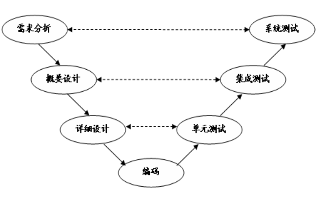
由图2-3可以看出，存在前趋关系Ii→Ci，Ii→Ii+1，Ci→Pi，Ci→Ci+1，Pi→Pi+1，而Ii+1和Ci及Pi-1是重叠的，即在Pi-1和Ci以及Ii+1之间，不存在前趋关系，可以并发执行。
2.⭐程序并发执行时的特征
- 间断性：程序并发执行时，由于它们共享系统资源等原因形成了相互制约的关系，相互制约将导致并发程序具有“执行—暂停—执行”这种间断性的活动规律
- 失去封闭性：程序在并发执行时，是多个程序共享系统中的各种资源，因而这些资源的状态将由多个程序来改变，致使程序的运行失去了封闭性。
- 不可再现性：程序在并发执行时，由于失去了封闭性，其计算结果已与并发程序的执行速度有关，从而使程序的执行失去了可再现性。
问题：⭐为什么说程序并发执行时失去了封闭性会使程序失去不可再现性？请举例说明。
例如，有两个循环程序 A 和 B，它们共享一个变量 N。
程序 A 每执行一次时，都要做 N:=N+1 操作程 序 B 每执行一次时，都要执行 Print(N)操作，然后再将 N 置成“0”。
程序 A 和 B 以不同的 速度运行。
这样，可能出现下述三种情况(假定某时刻变量 N 的值为 n)。
- (1) N:=N+1 在 Print(N)和 N:=0 之前，此时得到的 N 值分别为 n+1，n+1，0。
- (2) N:=N+1 在 Print(N)和 N:=0 之后，此时得到的 N 值分别为 n，0，1。
- (3) N:=N+1 在 Print(N)和 N:=0 之间，此时得到的 N 值分别为 n，n+1，0。
上述情况说明，程序在并发执行时，由于失去了封闭性，其计算结果已与并发程序的执行速度有关，从而使程序的执行失去了可再现性，亦即，程序经过多次执行后，虽然它 们执行时的环境和初始条件相同，但得到的结果却各不相同。
2.2 进程的描述
2.2.1 进程的定义和特征
1.定义
- 进程时程序的一次执行
- 解除是一个程序及其数据在处理及笋岗顺序执行时所发生的活动
- 进程是具有独立功能的程序在一个数据集合上运行的过程，是系统进行资源分配和调度的一个独立单位
2.特征
- 动态性
- 并发性
- 独立性
- 异步性
2.2.2 进行的基本状态及转换
1.进程的三种基本状态
- 就绪：当进程已分配到除 CPU 以外的所有必要资源后，只要再获得 CPU，便可立即执行，进程这时的状态称为就绪状态。在一个系统中处于就绪状态的进程可能有多个，通常将它们 排成一个队列，称为就绪队列。
- 执行：进程已获得 CPU，其程序正在执行。在单处理机系统中，只有一个进程处于执行状态； 在多处理机系统中，则有多个进程处于执行状态。
- 阻塞：正在执行的进程由于发生某事件而暂时无法继续执行时，便放弃处理机而处于暂停状态， 亦即进程的执行受到阻塞，把这种暂停状态称为阻塞状态，有时也称为等待状态或封锁状态。 致使进程阻塞的典型事件有：请求 I/O，申请缓冲空间等。通常将这种处于阻塞状态的进程也 排成一个队列。有的系统则根据阻塞原因的不同而把处于阻塞状态的进程排成多个队列。
2.三种基本状态的转换
处于就绪状态的进程，在调度程序为之分配了处理机之后，该进程便可执行，相应地，它就由就绪状态转变为执行状态。正在执行的进程也称为当前进程，如果 因分配给它的时间片已完而被暂停执行时，该进程便由执行状态又回复到就绪状态；如果因发生某事件而使进 程的执行受阻(例如，进程请求访问某临界资源，而该 资源正被其它进程访问时)，使之无法继续执行，该进 程将由执行状态转变为阻塞状态。
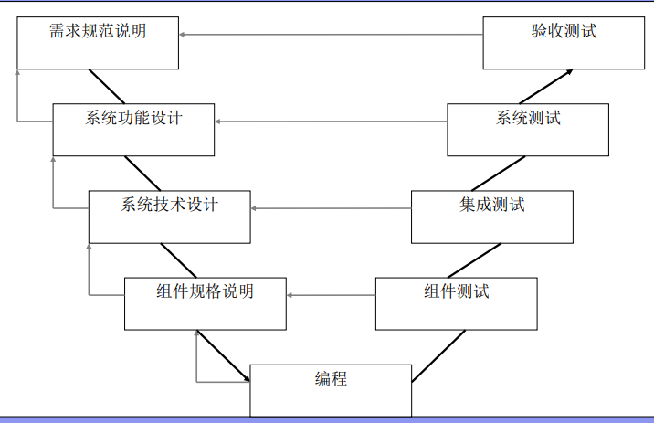
3.创建状态和终止状态
（1）创建状态 如前所述，进程是由创建而产生。创建一个进程是个很复杂的过程，一般要通过多个步骤才能完成：如首先由进程申请一个空白PCB，并向PCB中填写用于控制和管理进程的信息；然后为该进程分配运行时所必须的资源；最后，把该进程转入就绪状态并插入就绪队列之中。但如果进程所需的资源尚不能得到满足，比如系统尚无足够的内存使进程无法装入其中，此时创建工作尚未完成，进程不能被调度运行，于是把此时进程所处的状态称为创建状态。
（2) 终止状态 进程的终止也要通过两个步骤：首先，是等待操作系统进行善后处理，最后将其PCB清零，并将PCB空间返还系统。当一个进程到达了自然结束点，或是出现了无法克服的错误，或是被操作系统所终结，或是被其他有终止权的进程所终结，它将进入终止状态。进入终止态的进程以后不能再执行，但在操作系统中依然保留一个记录，其中保存状态码和一些计时统计数据，供其他进程收集。一旦其他进程完成了对其信息的提取之后，操作系统将删除该进程，即将其PCB清零，并将该空白PCB返还系统。

2.2.3 挂起操作和进程状态的转换
1.⭐为什么要引入挂起状态？（引起进程挂起的事件）
- ① 终端用户的需要
- ② 父进程请求
- ③ 负荷调节的需要
- ④ 操作系统的需要
2.隐去挂起原语操作后三个进程状态的转换
具有挂起状态的三个进程状态图：

3.引入挂起操作后五个进程状态的转换
具有创建、终止和挂起状态的五个进程状态图：

2.2.4 进程管理中的数据结构
1.操作系统中用于管理控制的数据结构
OS管理的这些数据结构一般分为以下四类：内存表、设备表、文件表和用于进程管理的进程表，通常进程表又被称为进程控制块PCB。
2.⭐进程控制块PCB有哪些作用？
- ① 作为独立运行基本单位的标志
- ② 能实现间断性运行方式
- ③ 提供进程管理所需要的信息
- ④ 提供进程调度所需要的信息
- ⑤ 实现与其它进程的同步与通信
3.⭐PCB包含哪些信息？
- ① 进程标识符，用于唯一地标识一个进程
- ② 处理机状态，也称为处理机的上下文，主要是由处理机的各种寄存器中的内容组成的
- ③ 进程调度信息，包括：
- 进程状态，指明进程的当前状态，它是作为进程调度和对换时的依据；
- 进程优先级，是用于描述进程使用处理机的优先级别的一个整数，优先级高的进程应优先获得处理机；
- 进程调度所需的其它信息，它们与所采用的进程调度算法有关；
- 事件，是指进程由执行状态转变为阻塞状态所等待发生的事件，即阻塞原因。
- ④ 进程控制信息，指用于进程控制所必须的信息，它包括：程序和数据的地址、进程同步和通信机制、资源清单、链接指针
4.进程控制块的组织方式
- (1) 线性方式
- (2) 链接方式
- (3) 索引方式
2.3 进程控制⭐
进程控制是进程管理中最基本的功能，主要包括创建新进程、终止已完成的进程、将因发生异常情况而无法继续运行的进程置于阻塞状态、负责进程运行中的状态转换等功能。
进程控制一般是由OS的内核中的原语来实现的
2.3.1 操作系统的内核⭐
1.内核的概念
通常将一些与硬件紧密相关的模块、各种常用设备的驱动程序以及运行频率较高的模块都安放在靠近硬件的软件层次中，通常被称为OS的内核。
2.处理机的执行状态
系统态，又称为管态，具有较高的特权，能执行一切指令。
用户态，又称为目态，只具有较低特权的执行状态，仅能执行规定的指令。
一般情况下，用户程序只能在用户态运行，不能执行OS指令及访问OS区域，这样可以防止用户程序对OS的破坏。
3.OS内核的功能
（1）支撑功能
- ① 中断处理
- ② 时钟管理
- ③ 原语操作
（2）资源管理功能
- ① 进程管理
- ② 存储器管理
- ③ 设备管理
4.⭐什么是原语？什么是原子操作？
原语就是由一段指令组成的，用于完成一定功能的一个过。
与一般过程的区别在于，它们是原子操作。原子操作就是指一个操作中的所有动作要么全做，要么全都不做。
2.3.2 进程的创建
1.进程的层次结构
2.进程图
所谓进程图就是用于描述进程间关系的一棵有向树

3.⭐引起创建进程的事件
- (1) 用户登录
- (2) 作业调度。
- (3) 提供服务。当用户程序提出某种请求后，系统会创建一个进程来提供所请求的服务。
- (4) 应用请求（由应用进程自己创建）
4.⭐进程的创建
(1) 申请空白 PCB。为新进程申请获得惟一的数字标识符，并从PCB 集合中索取一个 空白 PCB。
(2) 为新进程分配资源。为新进程的程序和数据以及用户栈分配必要的内存空间。
(3) 初始化进程控制块。PCB 的初始化包括：① 初始化标识信息；② 初始化处理机状态信息；③ 初始化处理机控制信息
(4) 将新进程插入就绪队列。如果进程就绪队列能够接纳新进程，便将新进程插入就绪 队列。
2.3.3 进程的终止⭐
1.⭐引起进程终止的事件
- (1) 正常结束
- (2) 异常结束：在进程运行期间，由于出现某些错误和故障而迫使进程终止
- (3) 外界干预：指进程应外界的请求而终止运行，如操作员或操作系统干预（死锁）。
2.进程的终止过程
如果系统中发生了要求终止进程的某事件，OS便调用进程终止原语，按下述过程去终止指定的进程：
- (1) 根据被终止进程的标识符，从PCB集合中检索出该进程的PCB，从中读出该进程的状态
- (2) 若被终止进程正处于执行状态，应立即终止该进程的执行，并置调度标志为真，用于指示该进程被终止后应重新进行调度；
- (3) 若该进程还有子孙进程，还应将其所有子孙进程也都予以终止，以防它们成为不可控的进程；
- (4) 将被终止进程所拥有的全部资源或者归还给其父进程，或者归还给系统；
- (5) 将被终止进程(PCB)从所在队列(或链表)中移出，等待其它程序来搜集信息。
2.3.4 进程的阻塞与唤醒⭐
1.有哪些引起进程阻塞的事件？
- (1) 向系统请求共享资源失败。
- (2) 等待某种操作的完成。
- (3) 新数据尚未到达。
- (4) 等待新任务的到达。
2.进程阻塞过程
- ① 进程通过调用阻塞原语block将自己阻塞。
- ② 然后把进程控制块中的现行状态由“执行”改为阻塞，并将PCB插入阻塞队列。
- ③ 最后，转调度程序进行重新调度，将处理机分配给另一就绪进程，并进行切换
3.进程唤醒过程
当被阻塞进程所期待的事件发生时，调用唤醒原语wakeup，将等待该事件的进程唤醒。
wakeup执行的过程是：首先把被阻塞的进程从等待该事件的阻塞队列中移出，将其PCB中的现行状态由阻塞改为就绪，然后再将该PCB插入到就绪队列中。
2.3.5 进程的挂起与激活⭐
1.为什么要引入进程的挂起？
2.进程的激活过程
当发生激活进程的事件时，若该进程驻留在外存而内存中已有足够的空间时，将在外存上处于静止就绪状态的该进程换入内存。
这时，系统将利用激活原语 active将指定进程激活。激活原语先将进程从外存调入内存，检查该进程的现行状态，若是静止就绪，便将之改为活动就绪；若为静止阻塞，便将之改为活动阻塞。
假如采用的是抢占调度策略，则每当有新进程进入就绪队列时，应检查是否要进行重新调度，即由调度程序将被激活进程与当前进程进行优先级的比较，如果被 激活进程的优先级更低，就不必重新调度；否则，立即剥夺当前进程的运行，把处理机分 配给刚被激活的进程。
2.4 进程同步⭐
引入进程同步的原因：
如果不能采取有效的措施，对多个进程的运行进行妥善的管理，必然会因为这些进程对系统资源的无序争夺给系统造成混乱。致使每次处理的结果存在着不确定性，即显现出其不可再现性。
2.4.1 进程同步的基本概念
1.两种形式的制约关系
（1）间接相互制约关系
（2）直接相互制约关系
2.临界资源
3.临界区
人们把在每个进程中访问临界资源的那段代码称为临界区
4.⭐同步机制应遵循的规则
(1) 空闲让进。当没有进程处于临界区时，应允许一个请求进入临界区的进程立即进入自己的临界区。 (2) 忙则等待。当已有进程进入临界区时，其它试图进 入临界区的进程必须等待。 (3) 有限等待。对要求访问临界资源的进程，应保证在有限时间内能进入自己的临界区， 以免陷入“死等”状态。 (4) 让权等待。当进程不能进入自己的临界区时，应立即释放处理机，以免进程陷入忙等状态。
2.4.2 硬件同步机制
1.关中断
定义：在进入锁测试之前关闭中断，直到完成锁测试并上锁之后才能打开中断。这样，进程在临界区执行期间，计算机系统不响应中断，从而不会引发调度，也就不会发生进程或线程切换。是实现互斥的最简单的方法之一。
缺点：
- ① 滥用关中断权力可能导致严重后果；
- ② 关中断时间过长，会影响系统效率，限制了处理器交叉执行程序的能力；
- ③ 关中断方法也不适用于多CPU 系统，因为在一个处理器上关中断并不能防止进程在其它处理器上执行相同的临界段代码。
2.利用Test-and-Set指令实现互斥
3.利用Swap指令实现进程互斥
2.4.3 信号量机制⭐
1.整型信号量
最初由 Dijkstra 把整型信号量定义为一个用于表示资源数目的整型量 S，它与一般整型 量不同，除初始化外，仅能通过两个标准的原子操作：
wait(S)和 signal(S) 来访问。这两个操作一直被分别称为 P、V 操作。
Wait(S)和 signal(S)操作可 描述为：
xwait(S)： while S<=0 do no-op；S:=S-1；
xxxxxxxxxxsignal(S)： S:=S+1；
2.记录型信号量
在整型信号量机制中的 wait 操作，只要是信号量 S≤0，就会不断地测试。因此，该机制并未遵循“让权等待”的准则，而是使进程处于“忙等”的状态。
记录型信号量机制则是一种不存在“忙等”现象的进程同步机制。但在采取了“让权等待”的策略后，又会出现多个进程等待访问同一临界资源的情况。
为此，在信号量机制中，除了需要一个用于代表资源数目的整型变量 value 外，还应增加一个进程链表指针 L，用于链接上述的所有等待进程。
它所包含的上述两个数据项可描述为：
xxxxxxxxxxtype semaphore=recordvalue: integer；L: list of process；end
相应地，wait(S)和 signal(S)操作可描述为
xxxxxxxxxxprocedure wait(S)var S：semaphore；beginS.value:=S.value-1；if S.value<0 then block(S.L)；endprocedure signal(S)var S: semaphore；beginS.value:=S.value+1；if S.value<=0 then wakeup(S.L)；end
3.AND型信号量
前面所述的进程互斥问题针对的是多个并发进程仅共享一个临界资源的情况。
在有些应用场合，是一个进程往往需要获得两个或更多的共享资源后方能执行其任务。
假定现有两个进程A和B，它们都要求访问共享数据D和E，为此，可为 这两个数据分别设置用于互斥的信号量 Dmutex 和 Emutex，并令它们的初值都是 1。
相应地， 在两个进程中都要包含两个对 Dmutex 和 Emutex 的操作，即：
xxxxxxxxxxprocess A: process B:wait(Dmutex)； wait(Emutex)；wait(Emutex)； wait(Dmutex)；
若进程 A 和 B 按下述次序交替执行 wait 操作：
xxxxxxxxxxprocess A: wait(Dmutex)； 于是 Dmutex=0process B: wait(Emutex)； 于是 Emutex=0process A: wait(Emutex)； 于是 Emutex=-1 A 阻塞process B: wait(Dmutex)； 于是 Dmutex=-1 B 阻塞
最后，进程 A 和 B 处于僵持状态。在无外力作用下，两者都将无法从僵持状态中解脱出来。我们称此时的进程 A 和 B 已进入死锁状态。显然，当进程同时要求的共享资源愈多时，发生进程死锁的可能性也就愈大。
AND 同步机制的基本思想是：将进程在整个运行过程中需要的所有资源，一次性全部地分配给进程，待进程使用完后再一起释放。只要尚有一个资源未能分配给进程，其它所有可能为之分配的资源也不分配给它。
为此，在 wait 操作中，增加了一个“AND”条件，故称为 AND 同步，或称为同时 wait 操作，即 Swait(Simultaneous wait)定义如下:
xxxxxxxxxxSwait(S1，S2，…，Sn)if Si>=1 and … and Sn>=1 thenfor i:=1 to n doSi:=Si-1；endforelseplace the process in the waiting queue associated with the first Si found with Si<1，and set theprogram count of this process to the beginning of Swait operationendifSsignal(S1，S2，…，Sn)for i:=1 to n doSi:=Si+1；Remove all the process waiting in the queue associated with Si into the ready queue.endfor；
4.信号量集
在前面所述的记录型信号量机制中，wait(S)或signal(S)操作仅能对信号量施以加1或减1操作，意味着每次只能对某类临界资源进行一个单位的申请或释放。
当一次需要 N 个某类临界资源时，便要 进行 N 次 wait(S)操作，显然这是低效的。
此外，在有些情况下，当资源数量低于某一下限值时，便不予以分配。因而，在每次分配之前，都必须测试该资源的数量，看其是否大于 其下限值。
基于上述两点，可以对 AND 信号量机制加以扩充，形成一般化的“信号量集” 机制。Swait 操作可描述如下，其中 S 为信号量，d 为需求值，而 t 为下限值。
xxxxxxxxxxSwait(S1，t1，d1，…，Sn，tn，dn)if Si>=t1 and … and Sn>=tn thenfor i:=1 to n doSi:=Si-di；endforelsePlace the executing process in the waiting queue of the first Si with Si<ti and set its program counterto the beginning of the Swait Operation.endifSsignal(S1，d1，…，Sn，dn)for i:=1 to n doSi:=Si+di；Remove all the process waiting in the queue associated with Siinto the ready queueendfor；
下面我们讨论一般“信号量集”的几种特殊情况：
(1) Swait(S，d，d)。此时在信号量集中只有一个信号量 S，但允许它每次申请 d 个资源，当现有资源数少于 d 时，不予分配。
(2) Swait(S，1，1)。此时的信号量集已退化为一般的记录型信号量(S>1 时)或互斥信号量(S=1 时)。
(3) Swait(S，1，0)。这是一种很特殊且很有用的信号量操作。当 S≥1 时，允许多个进程进入某特定区；当 S 变为 0 后，将阻止任何进程进入特定区。换言之，它相当于一个可控开关。
2.4.4 信号量的应用⭐
1.⭐利用信号量实现进程互斥
为使多个进程能互斥地访问某临界资源，只需为该资源设置一互斥信号量mutex，并设其初始值为1，然后将各进程访问该资源的临界区CS置于wait(mutex)和signal(mutex)操作之间即可。
这样，每个欲访问该临界资源的进程在进入临界区之前，都要先对 mutex 执行 wait 操作，若该资源此刻未被访问，本次 wait 操作必然成功，进程便可进入自己的临界区， 这时若再有其他进程也欲进入自己的临界区，此时由于对 mutex 执行 wait 操作定会失败，因而该进程阻塞，从而保证了该临界资源能被互斥地访问。当访问临界资源的进程退出临 界区后，又应对 mutex 执行 signal 操作，以便释放该临界资源。
利用信号量实现两个进程互斥的描述如下：
（1）设mutex为互斥信号量，初值为1，取值范围为(-1, 0, 1）。
mutex=1：两个进程均未进入需要互斥的临界区
mutex=0：有一个进程进入临界区，另一个必须等待
mutex=-1：有一个进程进入临界区，另一个因等待而阻塞在信号量队列中，需要被当前已在临界区运行的进程退出时唤醒
（2）代码描述 P61
2.利用信号量实现前趋关系
设有两个并发执行的进程P1和P2。P1中有语句S1；P2中有语句S2。
我们希望在S1执行后再执行S2。为实现这种前趋关系，只需使进程P1和P2共享一个公用信号量S，并赋予其初值为0，将signal(S)操作放在语句S1后面，而在S2语句前面插入wait(S)操作，即 在进程P1中，用S1；signal(S)； 在进程P2中，用wait(S)；S2；
由于S被初始化为0，这样，若P2先执行必定阻塞，只有在进程P1执行完S1； signal(S)；操作后使S增为1时，P2进程方能成功执行语句S2。

2.4.5 管程机制⭐
1.管程的定义
一个管程定义了一个数据结构和能为并发进程所执行的一组操作，这组操作能同步进程和改变管程中的数据。
由上述的定义可知，管程由四部分组成：
- ① 管程的名称；
- ② 局部于管程的共享数据结构说明；
- ③ 对该数据结构进行操作的一组过程；
- ④ 对局部于管程的共享数据设置初始值的语句

2.⭐管程与进程有什么不同？
- ① 数据结构。进程定义的是私有数据结构PCB，管程定义的是公共数据结构，如消息队列等
- ② 对数据结构的操作。进程是顺序程序执行有关结构，而管程主要是进行同步操作和初始化操作
- ③ 设置的目的。设置进程的目的在于实现系统的并发性，设置管程是为了解决共享资源的互斥使用问题；
- ④ 工作方式。进程通过调用管程中的过程对共享数据进行操作，该过程就如子程序被调用，因而管程为被动工作方式，进程为主动工作方式
2.条件变量
在利用管程实现进程同步时，必须设置同步工具，如两个同步操作原语wait和signal。当某进程通过管程请求获得临界资源而未能满足时，管程便调用wait原语使该进程等待，并将其排在等待队列上，如图所示。仅当另一进程访问完成并释放该资源之后，管程才又调用signal原语，唤醒等待队列中的队首进程。
2.5 经典进程同步问题⭐
2.5.1 生产者-消费者问题
2.5.2 哲学家进餐问题
2.5.3 读者-写者问题
2.6 进程通信
进程通信是指进程之间的信息交换。
2.6.1 进程通信的类型
1.共享存储器系统：在共享存储器系统中，相互通信的进程共享某些数据结构或共享存储区，进程之间能够通过这些空间进行通信
2.管道通信系统：所谓“管道”，是指用于连接一个读进程和一个写进程以实现它们之间通信的一个共享文件。
向管道(共享文件)提供输入的发送进程(即写进程)以字符流形式将大量的数据送入管道；而接受管道输出的接收进程(即读进程)则从管道中接收(读)数据。
3.⭐消息传递系统：在该机制中以格式化的消息为单位，将通信的数据封装在消息中，并利用操作系统提供的一组通信命令(原语)，在进程间进行消息传递，完成进程间的数据交换。基于消息传递系统的通信方式属于高级通信方式。
4.客户机-服务器系统
3种实现方法：
（1） 套接字
（2）远程过程调用
（3）远程方法调用
2.6.2 消息传递通信的实现方式
1.直接消息传递系统
在直接消息传递系统中采用直接通信方式，即发送进程利用OS所提供的发送命令(原语)，直接把消息发送给目标进程。
（1）直接通信原语：对称寻址方式，非对称寻址方式 send receive
（2）消息的格式
（3）进程的同步方式：不论是发送进程还是接收进程，在完成消息的发送或接收后，都存在两种可能性，即进程或者继续发送(或接收)或者阻塞。
- ① 发送进程阻塞，接受进程阻塞
- ② 发送进程不阻塞，接受进程阻塞
- ③ 发送进程和接收进程都不阻塞
（4）通信链路：单向通信链路，双向通信链路
2.信箱通信（属于间接通信方式）
（1）信箱的结构 信箱定义为一种数据结构。在逻辑上，可以将其分为两个部分： (1) 信箱头 (2) 信箱体

（2）信箱通信原语 系统为邮箱通信提供了若干条原语，分别用于： ① 邮箱的创建和撤消 ② 消息的发送和接收
（3）信箱的类型
- ① 私用信箱：用户进程创建
- ② 公用信箱：OS创建
- ③ 共享信箱：某进程创建
2.6.3 直接消息传递系统实例
2.7 线程的基本概念
2.7.1 线程的引入⭐
为什么要引入进程？
为了使多个程序能并发执行，以提高资源利用率和系统吞吐量
为什么要引入线程？
为了减少程序在并发执行时所付出的时空开销，使OS具有更好的并发性
1.进程的两个基本属性（什么是进程？）⭐
① 进程是一个可拥有资源的独立单位。一个进程要能独立运行，它必须拥有一定的资源，包括用于磁盘和内存地址空间，和I/O设备、已打开的文件、信号量等；
② 进程同时又是一个可独立调度和分派的基本单位。每个进程在系统中有唯一的PCB，系统根据其PCB感知进程的存在，也可以根据其PCB中的信息，对进程进行调度，还可将断点信息保存在其PCB中。反之，再利用进程PCB中的信息来恢复进程运行的现场。正是由于进程有这两个基本属性，才使进程成为一个能独立运行的基本单位，从而也就构成了进程并发执行的基础。
2.程序并发执行所需付出的时空开销
- (1) 创建进程，系统在创建一个进程时，必须为它分配其所必需的、除处理机以外的所有资源，如内存空间、I/O设备，以及建立相应的PCB；
- (2) 撤消进程，系统在撤消进程时，又必须先对其所占有的资源执行回收操作，然后再撤消PCB；
- (3) 进程切换，对进程进行上下文切换时，需要保留当前进程的CPU环境，设置新选中进程的CPU环境。
3.线程——作为调度和分派的基本单位
如何能使多个程序更好地并发执行，同时又尽量减少系统的开销。有不少学者想到，要设法将进程的上述两个属性分开，由OS分开处理，亦即并不把作为调度和分派的基本单位也同时作为拥有资源的单位。而对于拥有资源的基本单位，不对其进行频繁切换。正是在这种思想的指导下，形成了线程的概念。
2.7.2 线程与进程的比较（线程和进程有什么不同？）⭐
- 调度的基本单位
- 并发性
- 拥有资源
- 独立性
- 系统开销
- 支持多处理机系统
2.7.3 线程的状态和线程控制块
1.线程运行的三个状态
(1) 执行状态，表示线程已获得处理机而正在运行； (2) 就绪状态，指线程已具备了各种执行条件，只须再获得CPU便可立即执行； (3) 阻塞状态，指线程在执行中因某事件受阻而处于暂停状态，例如，当一个线程执行从键盘读入数据的系统调用时，该线程就被阻塞。
2.线程控制块TCB
每个线程配置了一个线程控制块TCB，将所有用于控制和管理线程的信息记录在线程控制块中。
3.多线程OS中的进程属性
(1) 进程是一个可拥有资源的基本单位。 (2) 多个线程可并发执行。 (3) 进程已不是可执行的实体。
2.8 线程的实现
2.8.1 线程的实现方式⭐
1.内核支持线程KST
OS中的所有进程，无论是系统进程还是用户进程，都是在操作系统内核的支持下运行的，是与内核紧密相关的。而内核支持线程KST同样也是在内核的支持下运行的，它们的创建、阻塞、撤消和切换等，也都是在内核空间实现的。为了对内核线程进行控制和管理，在内核空间也为每一个内核线程设置了一个线程控制块，内核根据该控制块而感知某线程的存在，并对其加以控制。当前大多数OS都支持内核支持线程。
优点： ① 在多处理器系统中，内核能够同时调度同一进程中的多个线程并行执行； ② 如果进程中的一个线程被阻塞了，内核可以调度该进程中的其它线程占有处理器运行，也可以运行其它进程中的线程； ③ 内核支持线程具有很小的数据结构和堆栈，线程的切换比较快，切换开销小； ④ 内核本身也可以采用多线程技术，可以提高系统的执行速度和效率。 缺点：用户线程切换代价大（用户态->内核态）
2.用户级线程ULT
用户级线程是在用户空间中实现的。对线程的创建、 撤消、同步与通信等功能，都无需内核的支持，即用户级线程是与内核无关的。在一个系统中的用户级线程的数目可以达到数百个至数千个。由于这些线程的任务控制块(TCB)都是设置在用户空间，而线程所执行的操作也无需内核的帮助，因而内核完全不知道用户级线程的存在。
优点： ① 线程切换不需要转换到内核空间。 ② 调度算法可以是进程专用的。 ③ 用户级线程的实现与OS平台无关，因为对于线程管理的代码是属于用户程序的一部分，所有的应用程序都可以对之进行共享。
缺点： ① 系统调用的阻塞问题。在基于进程机制的OS中，大多数系统调用将使进程阻塞，因此，当线程执行一个系统调用时，不仅该线程被阻塞，而且，进程内的所有线程会被阻塞。而在内核支持线程方式中，则进程中的其它线程仍然可以运行。 ② 在单纯的用户级线程实现方式中，多线程应用不能利用多处理机进行多重处理的优点，内核每次分配给一个进程的仅有一个CPU，因此，进程中仅有一个线程能执行，在该线程放弃CPU之前，其它线程只能等待
2.8.2 线程的实现
1.内核支持线程的实现
在仅设置了内核支持线程的OS中，一种可能的线程控制方法是，系统在创建一个新进程时，便为它分配一个任务数据区PTDA(Per Task Data Area)，其中包括若干个线程控制块TCB空间，如图所示。

2.用户级线程的实现
有两种方式实现，运行时系统和内核控制线程
（1）运行时系统
所谓“运行时系统”，实质上是用于管理和控制线程的函数(过程)的集合，其中包括用于创建和撤消线程的函数、线程同步和通信的函数，以及实现线程调度的函数等。正因为有这些函数，才能使用户级线程与内核无关。运行时系统中的所有函数都驻留在用户空间，并作为用户级线程与内核之间的接口。
（2）内核控制线程
这种线程又称为轻型进程LWP。每一个进程都可拥有多个LWP，同用户级线程一样，每个LWP都有自己的数据结构(如TCB)，其中包括线程标识符、优先级、状态，另外还有栈和局部存储区等。LWP也可以共享进程所拥有的资源。LWP可通过系统调用来获得内核提供的服务，这样，当一个用户级线程运行时，只须将它连接到一个LWP上，此时它便具有了内核支持线程的所有属性。这种线程实现方式就是组合方式

2.8.3 线程的创建和终止
1.线程的创建
应用程序在启动时，通常仅有一个线程在执行，它的主要功能是用于创建新线程。在创建新线程时，需要利用一个线程创建函数(或系统调用)，并提供相应的参数，如指向线程主程序的入口指针、堆栈的大小，以及用于调度的优先级等。在线程的创建函数执行完后，将返回一个线程标识符供以后使用。
2.线程的终止
当一个线程完成了自己的任务后，或是线程在运行中出现异常情况而须被强行终止时，由终止线程通过调用相应的函数(或系统调用)对它执行终止操作。
3.调度和死锁
3.1 调度的层次和调度算法的目标
3.1.1 处理机调度的层次
- 高级调度：又称作业调度，调度对象是作业。主要功能是根据某种算法决定调入哪些作业，为它们创建进程和分配资源。
- 低级调度：又称进程调度，调度对象是进程，主要功能是根据某种算法决定就绪队列的哪个进程获得处理机。
- 中级调度：又称为内存调度，作用是提高内存利用率和系统吞吐量。主要功能是把暂时不能运行的进程调至外存等待，当进程具备运行条件或内存有空闲时，重新调入内存。中级调度实际上就是对换功能。
3.1.2 处理机调度算法的目标
1.⭐处理机调度算法的共同目标
①资源利用率：指 CPU有效工作时间 比上 CPU有效工作时间加CPU空闲等待时间
②公平性：指应使各进程都获得合理的CPU时间，不会发生进程饥饿现象
③平衡性：指系统中的CPU和各种外部设备都能经常处于忙碌状态，调度算法应能保持系统资源使用的平衡性
④策略强制执行：对于所制定的策略，只要需要，就必须准确的执行
2.批处理系统的目标
- ①平均周转时间短
- ②系统吞吐量高
- ③处理机利用率高
3.分时系统的目标
- ①响应时间快
- ②均衡性
4.实时系统的目标
- ①截止时间保证
- ②可预测性
3.2 作业和作业调度
3.2.1 批处理系统中的作业
1.什么是作业？
作业包含了通常的程序和数据，和一份作业说明书，系统根据说明书来对程序的运行进行控制。
2.什么是作业控制块JCB？
作业控制块是作业在系统中存在的标志，其中保存了系统对作业进行管理和调度所需的全部信息。
3.2.2 作业调度的主要任务⭐
作业调度的主要功能是根据作业控制块中的信息，审查系统能否满足用户作业的资源需求，以及按照一定的算法，从外存的后备队列中选取某些作业调入内存，并为它们创建进程、分配必要的资源。然后再将新创建的进程插入就绪队列，准备执行。
在每次执行作业调度时，都须做出以下两个决定：
(1)决定接纳多少个作业：这取决于多道程序度， 即同时允许多少个作业在内存中运行。多道程序度的确定应根据系统的规模和运行速度等情况做适当的折衷。
(2)决定接纳哪些作业：应将哪些作业从外存调入内存，这将取决于所采用的调度算法。
3.2.3 先来先服务FCFS和短作业优先SJF调度算法⭐
1.先来先服务调度算法FCFS
FCFS调度算法是一种最简单的调度算法，该算法既可用于作业调度，也可用于进程调度。
当在作业调度中采用该算法时，每次调度都是从后备作业队列中选择一个或多个最先进入该队列的作业，将它们调入内存，为它们分配资源、创建进程，然后放 入就绪队列。在进程调度中采用 FCFS 算法时，则每次调度是从就绪队列中选择一个最先进入该队列的进程，为之分配处理机，使之投入运行。该进程一直运行到完成或发生某事件 而阻塞后才放弃处理机。 FCFS 算法比较有利于长作业(进程)，而不利于短作业(进程)。
2.短作业优先调度算法SJF
（1）概念：SJF算法是以作业的长短来计算优先级，作业越短，优先级越高。而作业的长短又以作业所要求的运行时间来衡量的。
（2）缺点：
- ①必须预知作业的运行时间，但一般难以估计作业的运行时间
- ②该算法对长作业不利，长作业的周转时间会明显增长。更严重的是，如果有一长作业进入系统的后备队列，由于调度程序总是优先调度那些(即使是后进来的)短作业，将导致长作业(进程)长期不被调度
- ③该算法完全未考虑作业的紧迫程度，因而不能保证紧迫性作业(进程)会被及时处理。
- ④采用该算法时，无法实现人机交互
3.2.4 优先级调度算法和高响应比优先调度算法⭐
1.优先级调度算法PSA
（1）概念：在优先级调度算法中，是基于作业的紧迫程度，由外部赋予作业相应的优先级，调度算法根据该优先级进行调度的。
（2）优点：可以保证紧迫性作业优先运行
2.高响应比优先调度算法HRRN
（1）概念：高响应比优先调度算法是考虑了作业的等待时间和作业的运行时间的调度算法
（2）优点：既照顾了短作业，又不会使长作业的等待时间过长，从而改善了处理机的调度性能。
（3）实现：为每个作业引入一个动态优先级，令它随等待时间延长而增加，这使得长作业的优先级在等待期间不断增加，等到足够的时间后，必然有机会获得处理机。
优先级的变化规律如下：
优先权 = 等待时间+要求服务时间 / 要求服务时间
该优先级又相当于相应比Rp
从上式可以看出：
①如果作业的等待时间相同，则要求服务的时间越短，其优先级越高，有利于短作业
②如果要求服务时间相同，则作业的等待时间越长，其优先级越高，类似FCFS
③对于长作业的优先级，可以随等待时间增加的提高，当足够长时，也可以获得处理机
缺点：每次进行调度前，都要计算响应比，增加了系统开销
3.3 进程调度⭐
3.3.1 进程调度的任务、机制和方式
1.进程调度的任务有哪些？
①保存处理机的现场信息
②按某种算法选取进程
③把处理机分配给进程
2.进程调度机制
3.⭐进程调度方式有哪些？
（1）非抢占方式
定义：采用这种调度方式时，一旦把处理机分配给某进程后，就一直让它运行下去，直到该进程完成或被阻塞时，才把处理机分配给其他进程。
采用非抢占调度方式时，可能会引起进程调度的原因：
①正在执行的进程运行完毕，或因发生某事件而无法继续运行
②正在执行的进程因提出IO请求而被暂停执行
③在进程通信或同步过程中，执行了某种原语操作，如Block原语
优点：实现简单，系统开销小
缺点：不能用于分时系统和大多数实时系统
（2）抢占方式
定义：这种调度方式允许调度程序根据某种原则，去暂停某个正在执行的进程，将已分配给该进程的处理机重新分配给另一进程。
优点：
①能够实现人机交互
②能满足实时系统中实时任务的需求
缺点：抢占分时比较复杂，付出的系统开销也较大
⭐抢占需要遵循的原则：
①优先权原则，指允许优先级高的新到进程抢占当前进程的处理机
②短进程优先原则，指允许新到的短进程抢占当前长进程的处理机
③时间片原则，即各进程按时间片轮转进行时，当正在执行的进程的一个时间片用完后，便停止该进程的执行而重新进行调度
3.3.2 轮转调度算法⭐
1.轮转法的基本原理
在轮转法中，系统将所有就绪进程按FCFS排成一个就绪队列， 每次调度时，把CPU分配给队首进程，并令其执行一个时间片。当执行的时间片用完时，系统产生一次中断请求，调度程序停止该进程的执行，并将它送往就绪队列的末尾；然后，再把处理机分配给就绪队列中 新的队首进程。
这样就可以保证就绪队列中的所有进程在一 给定的时间内均能获得一次CPU执行。换言之，系统能在给定的时间内响应所有用户的请求。
2.⭐进程切换时机
①若一个时间片尚未用完，但进程已经完成，就立即进行进程切换
②一个时间片用完时，计时器中断处理机程序被激活，进行进程切换。如果进程尚未运行完毕，则调度程序把它送到队尾
3.⭐如何确定时间片大小？
一个较为可取的时间片大小时略大于一次典型交互所需要的时机，使大多数交互式进程能在一个时间片内完成，从而可以获得较小的响应时间。
时间片选的过小，会频繁的执行进程调度和进程上下文切换，增加了系统开销。
时间片选的过大，会使每个进程都能在一个时间片内完成，RR算法便退化为FCFS，无法满足短作业和交互式用户的需求

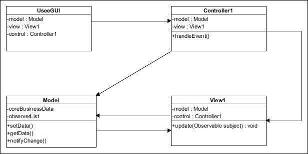
3.3.3 优先级调度算法
1.优先级调度算法的类型
优先级进程调度算法，是把处理机分配给就绪队列中优先级最高的进程。
（1）非抢占式优先级调度算法。一旦把处理机分配给就绪队列中优先级最高的进程后，该进程便一直执行下去直到完成，或者因该进程发生某事件而放弃处理机时，系统才可将处理机分配给另一优先级最高的进程。
（2）抢占式优先级调度算法。把处理机分配给优先级最高的进程。但在进程执行期间，只要出现了另一个优先级更高的进程，系统就把处理机分配给新到的优先级最高的进程。
2.优先级的类型
（1）静态优先级
静态优先级时在创建进程时确定的，在进程运行期间不变。
（2）动态优先级
动态优先级是指在创建进程之初，先赋予其一个优先级，然后其值随进程的推进或等待时间的增加而改变。
3.3.4 多队列调度算法
单一就绪队列的缺点： 无法满足系统中不同用户对进程调度策略的不同要求
多队列调度算法概念：将系统的就绪队列从一个拆分为若干个，将不同类型或性质的进程固定分配在不同的就绪队列，不同的就绪队列采用不同的调度算法，一个就绪队列的进程可以设置不同的优先级，不同的就绪队列本身也可以设置不同的优先级。
多队列调度算法优点：满足了不同用户的不同需求，很容易提供多种调度策略。在多处理机系统中，还可以对每个处理机实施不同的调度策略。
3.3.5 多级反馈队列调度算法
前面介绍的各种用作进程调度的算法都有一定的局限性。如短进程优先的调度算法， 仅照顾了短进程而忽略了长进程，而且如果并未指明进程的长度，则短进程优先和基于进程 长度的抢占式调度算法都将无法使用。
而多级反馈队列调度算法则不必事先知道各种进程所需的执行时间，而且还可以满足各种类型进程的需要。
1.调度机制
(1) 应设置多个就绪队列，并为各个队列赋予不同的优先级。第一个队列的优先级最高， 第二个队列次之，其余各队列的优先权逐个降低。
该算法赋予各个队列中进程执行时间片的大小也各不相同，在优先权愈高的队列中，时间片就愈小。例如，第二个队列的时间片要比第一个队列的时间片长一倍，……，第 i+1 个队列的时间片要 比第 i 个队列的时间片长一倍。

(2) 当一个新进程进入内存后，首先将它放入第一队列的末尾，按 FCFS 原则排队等待 调度。
当轮到该进程执行时，如它能在该时间片内完成，便可准备撤离系统；
如果它不能在一个时间片内完成，则转入第二队列的末尾，再同样地按 FCFS 原则等待调度执行；
如此下去，当一个长进程从第一队列依次降到第 n 队列后，在第 n 队列中便采取按时间片轮转的方式运行。
(3) 仅当第一队列空闲时，调度程序才调度第二队列中的进程运行；
仅当第 1～(i-1)队 列均空时，才会调度第 i 队列中的进程运行。
如果处理机正在第 i 队列中为某进程服务时， 又有新进程进入优先权较高的队列，则此时新进程将抢占正在运行进程的处理机
2.算法性能
如果规定第一队列的时间片略大于多数人机交互所需的处理时间，就能很好的满足各类用户的需要。
（1）终端型用户。这类用户提交的作业多为交互型作业，系统要能这些作业在第一队列规定的时间片内完成，就能使这类用户满意。
（2）短批处理作业用户。这类作业如果可在第一队列完成，就可以获得和终端型用户作业一样的响应时间，对于稍长的作业，只需在第二和第三队列完成，周转时间还是比较短。
（3）长批处理作业用户。对于长作业，将依次在n个队列中运行，最后再按轮转方式运行，用户不必担心长作业长期得不到处理。
3.3.6 基于公平原则的调度算法
1.保证调度算法
如果在系统中有n个相同类型的进程同时运行，须保证每个进程都获得相同的处理机时间1/n。
在实施公平调度算法时系统必须具有如下功能：
① 跟踪计算每个进程自创建以来已经实际执行的处理时间
② 计算每个进程应获得的处理机时间，即自创建以来的时间除以n
③ 计算进程获得处理机时间的比率，即进程实际执行的处理时间和应获得的处理机时间之比
④ 比较各进程获得处理机时间的比率
⑤ 调度程序应选择比率最小的进程将处理机分配给它，并让它一直运行下去，直到比率不为最小值为止。
2.公平分享调度算法
分配给每个进程相同的处理机时间对于各个进程来说是公平的，但是如果每个用户拥有的进程数不同，那对于用户来说是不公平的。
假设系统有2个用户，用户1启动了4个进程，用户2只启动1个进程，采用轮转法让每个进程轮流运行，那么对进程而言是公平的，但用户1和用户2得到的处理机时间分别为80%和20%，对于用户2而言就是不公平的。
在公平分享调度算法中，调度的公平性主要是针对用户而言，使所有用户能获得相同的处理机时间，或者所要求的时间比例。
例如系统中有两个用户，用户1有4个进程A,B,C,D，用户2有1个进程E。为保证两个用户能获得相同的处理机时间，则必须执行如下的强制调度序列：
A E B E C E D E A E B E C E D E ......
如果希望用户1处理机时间：用户2处理机时间为2：1：
A B E C D E A B E C D E ......
3.4 实时调度
3.4.1 实现实时调度需要哪些条件？
提供必要的信息
为了实现实时调度，系统应向调度程序提供有关任务的下述一些信息：
(1) 就绪时间。这是该任务成为就绪状态的起始时间，在周期任务的情况下，它就是事先预知的一串时间序列；而在非周期任务的情况下，它也可能是预知的
(2) 开始截止时间和完成截止时间。对于典型的实时应用，只须知道开始截止时间，或者知道完成截止时间
(3) 处理时间。这是指一个任务从开始执行直至完成所需的时间。在某些情况下，该时间也是系统提供的
(4) 资源要求。这是指任务执行时所需的一组资源。
(5) 优先级。如果某任务的开始截止时间已经错过，就会引起故障，则应为该任务赋予“绝对”优先级；如果开始截止时间的推迟对任务的继续运行无重大影响，则可为该任务赋予“相对”优先级，供调度程序参考
系统处理能力强
采用抢占式调度机制
具有快速切换机制。为保证要求较高的硬实时任务能及时运行，在实时系统中还应具有快速切换机制，以保证能进行任务的快速切换。
3.4.2 实时调度算法的分类
1.非抢占式调度算法：些小型实时系统或要求不太严格 的实时控制系统
（1）非抢占式轮转调度算法：工业生产的群控系统
（2）非抢占式优先调度算法：实时系统中存在着要求较为严格(响应时间为数百毫秒)的任务
2.抢占式调度算法：在要求较严格的(响应时间为数十毫秒以下)的实时系统
（1）基于时钟中断的抢占式优先权调度算法
在某实时任务到达后，如果该任务的优先级高于当前任务的优先级，这时并不立即抢占当前任务的处理机，而是等到时钟中断到来时，调度程序才剥夺当前任务的执行，将处理机分配给新到的高优先权任务
（2）立即抢占的优先权调度算法
在这种调度策略中，要求操作系统具有快速响应外部事件中断的能力。一旦出现外部中断，只要当前任务未处于临界区，便立即剥夺当前任务的执行，把处理机分配给请求中断的紧迫任务
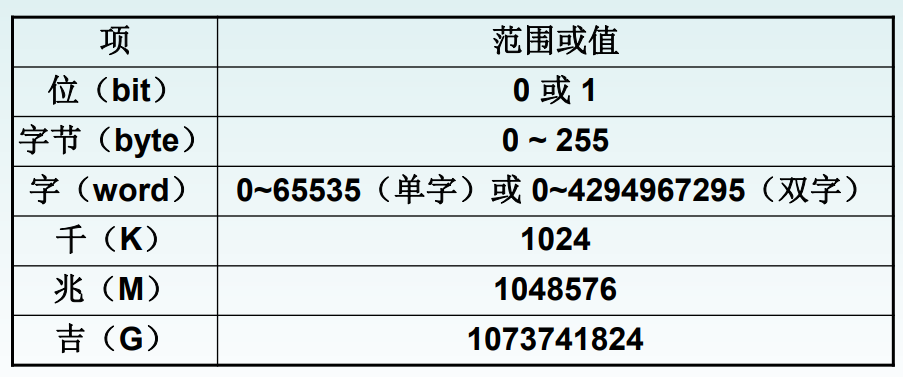
3.4.3 最早截止时间优先EDF算法⭐
⭐什么是最早截止时间优先算法?
EDF是根据任务的截止时间确定任务的优先级，任务截止实际越早，优先级越高，具有最早截止时间的任务排在队首。调度程序总是选择就绪队列第一个任务，为它分配处理机。
1.非抢占调度方式用于非周期实时任务
图示出了将该算法用于非抢占调度方式之例。该例中具有四个非周期任务，它们先 后到达。系统首先调度任务 1 执行，在任务 1 执行期间，任务 2、3 又先后到达。由于任务 3 的开始截止时间早于任务 2，故系统在任务 1 后将调度任务 3 执行。在此期间又到达作业 4，其开始截止时间仍是早于任务 2 的，故在任务 3 执行完后，系统又调度任务 4 执行，最后才调度任务 2 执行。
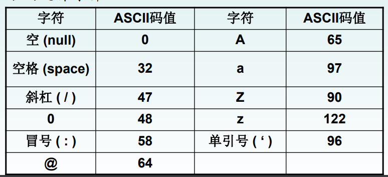
2.抢占式调度方式用于周期实时任务
图示出了将最早截止时间优先算法用于抢占调度方式之例。在该例中有两个周期 性任务，任务 A 的周期时间为 20 ms，每个周期的处理时间为 10 ms；任务 B 的周期时间为 50 ms，每个周期的处理时间为 25 ms。图中的第一行示出了两个任务的到达时间、最后期 限和执行时间图。其中任务 A 的到达时间为 0、20、40、…；任务 A 的最后期限为 20、40、 60、…；任务 B 的到达时间为 0、50、100、…；任务 B 的最后期限为 50、100、150、…(注： 单位皆为 ms)。
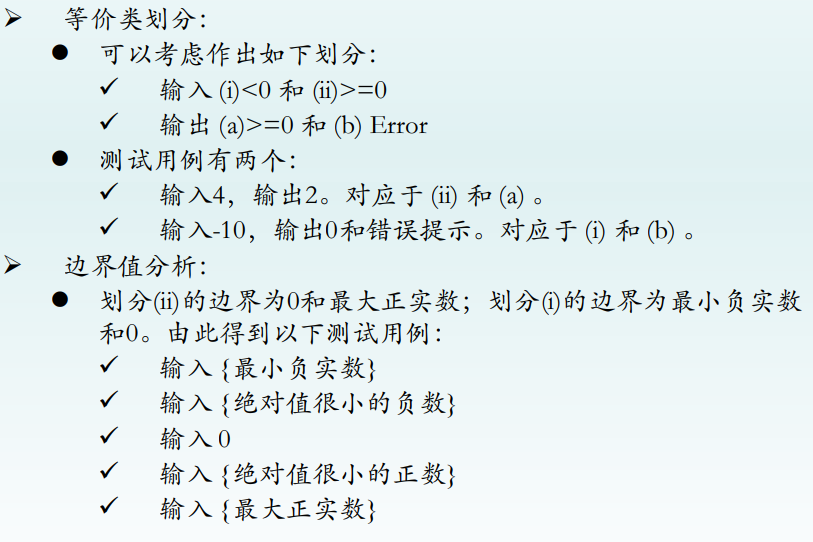
为了说明通常的优先级调度不能适用于实时系统，该图特增加了第二和第三行。在第 二行中假定任务 A 具有较高的优先级，所以在 t = 0 ms 时，先调度 A1 执行，在 A1 完成后 (t = 10 ms)才调度 B1 执行；在 t = 20 ms 时，调度 A2 执行；在 t = 30 ms 时，A2 完成，又调 度 B1 执行；在 t = 40 ms 时，调度 A3 执行；在 t = 50 ms 时，虽然 A3 已完成，但 B1 已错过了它的最后期限，这说明了利用通常的优先级调度已经失败。第三行与第二行类似，只 是假定任务 B 具有较高的优先级。 第四行是采用最早截止时间优先算法的时间图。在 t = 0 时，A1 和 B1 同时到达，由于 A1 的截止时间比 B1 早，故调度 A1 执行；在 t = 10 时，A1 完成，又调度 B1 执行；在 t = 20 时，A2 到达，由于 A2 的截止时间比 B2 早，B1 被中断而调度 A2 执行；在 t = 30 时，A2 完成，又重新调度 B1 执行；在 t = 40 时，A3 又到达，但 B1 的截止时间要比 A3 早，仍应 让 B1 继续执行直到完成(t = 45)，然后再调度 A3 执行；在 t = 55 时，A3 完成，又调度 B2 执行。在该例中利用最早截止时间优先算法可以满足系统的要求。
3.4.4 最低松弛度优先LLF算法⭐
⭐什么是最低松弛度优先LLF算法?
最低松弛度优先算法是根据任务紧急(或松弛)的程度，来确定任务的优先级。任务的紧急程度愈高，为该任务所赋予的优先级就愈高，以使之优先执行。
在实现该算法时要求系统中有一个按松弛度排序的实时任务就绪队列，松弛度最低的任务排在队列最前面，调度程序总是选择就绪队列中的队首任务执行。
该算法主要用于可抢占调度方式中。
假如在一个实时系统中，有两个周期性实时任务A和B，任务A要求每 20ms执行一次，执行时间为10ms；任务B只要求每 50 ms 执行一 次，执行时间为 25 ms。由此任务A和B每次必须完成的时间分别为：A1、A2、A3、… 和 B1、B2、B3、…。

在刚开始时(t1 = 0)，A1 必须在 20 ms 时完成，而它本身运行又需 10 ms，可算出 A1 的 松弛度为 10 ms；
B1 必须在 50 ms 时完成，而它本身运行就需 25 ms，可算出 B1 的松弛度 为 25 ms，故调度程序应先调度 A1 执行。
在 t2 = 10 ms 时，A2 的松弛度可按下式算出：
类似地，可算出 B1 的松弛度为 15 ms，故调度程序应选择 B2 运行。
- 在 t3 = 30 ms 时， A2 的松弛度已减为 0(即 40 - 10 - 30)，而 B1 的松弛度为 15 ms(即 50 - 5 - 30)，于是调度程 序应抢占B1的处理机而调度 A2运行。
- 在 t4 = 40 ms 时，A3的松弛度为 10 ms(即 60 - 10 - 40)， 而 B1 的松弛度仅为 5 ms(即 50 - 5 - 40)，故又应重新调度 B1 执行。
- 在 t5 = 45 ms 时，B1 执行完成，而此时 A3 的松弛度已减为 5 ms(即 60 - 10 - 45)，而 B2 的松弛度为 30 ms (即 100 - 25 - 45)，于是又应调度 A3 执行。
- 在 t6 = 55 ms 时，任务 A 尚未进入第 4 周期，而任务B已进入第2周期，故再调度B2执行。
- 在 t7 = 70 ms 时，A4 的松弛度已减至 0 ms (即 80 - 10 - 70)，而 B2 的松弛度为 20 ms(即 100 - 10 - 70)，故此时调度又应抢占 B2 的处 理机而调度 A4 执行。

3.4.5 优先级倒置
1.⭐什么是优先级倒置？请举例说明。
优先级倒置就是高优先级进程被低优先级进程延迟或阻塞的现象。假如有3个独立的进程P1,P2,P3，优先级P1>P2>P3。P1和P3通过共享的一个临界资源进行交互。假设P3最先执行，进行P(mutex)操作后，进入临界区CS-3。在t1时刻，P2就绪，因为它比P3优先级高，所以P2抢占了P3的处理机而执行。在t2时刻，P1就绪，因为它优先级比P2高，所以抢占了P2的处理机而运行。在t3时刻，P1执行P(mutex)，试图进入临界区CS-1，但因为相应的临界资源被P3占用，所以P1被阻塞，P2继续运行。直到时刻t4，P2结束运行，P3接着运行。直到时刻t5，P3退出临界区，并唤醒P1，由于P1比P3优先级高，故P1抢占了P3的处理机而运行。在上述例子中，P1和P3共享临界资源，导致出现了优先级低的进程比优先级高的进程阻塞了，又因为P2进程的存在延长了P1被阻塞的时间，被延长的时间是不可预知的，由此产生了优先级倒置现象。
2.⭐如何解决优先级倒置问题？
一个比较使用的方法是建立在动态优先级继承基础上的。规定，当高优先级进程P1要进入临界区，去使用临界资源R时，如果已有一个低优先级的P3正在使用该资源，此时P1被阻塞，同时P3继承P1的优先级，直到P3退出临界区。这样一来，即使有比P3优先级高比P1优先级低的进程P2，也不会延长P1被阻塞的时间。
3.5 ⭐死锁概述
3.5.1 死锁的定义
如果一组进程中的每一个进程都在等待仅由该组中的其它进程才能引发的事件，那么这组进程是死锁的，
3.5.2⭐产生死锁的必要条件
- 互斥条件。指进程对于所分配到的资源进行排它性使用，即在一段时间内，某资源只能被一个进程占用。
- 请求和保持条件。进程已经保持了至少一个资源，但又提出了新的资源请求，而该资源已被其它进程占用，请求进程被阻塞，但是保持已获得的资源。
- 不可抢占条件。进程已获得的资源在未使用完之前不能被抢占，只能在使用完之后自己释放。
- 循环等待条件。发生死锁时，必然存在一个进程-资源的循环链，即P0等待P1占用的资源，P1等待P2占用的资源，......，Pn等待P0占用的资源。
3.5.3 如何处理死锁？
- 预防死锁。该方法是通过设置某些限制条件，去破坏产生死锁的四个必要条件中的一个或几个条件，来预防发生死锁。
- 避免死锁。该方法是在资源的动态分配过程中，用某种方法去防止系统进入不安全状态，从而避免发生死锁。
- 检测死锁。这种方法允许系统在运行过程中发生死锁。但通过系统所设置的检测机构及时地检测出死锁的发生，并精确地确定与死锁有关的进程和资源； 然后，采取适当措施， 从系统中将已发生的死锁清除掉。
- 解除死锁。当检测到系统中已发生死锁时，须将进程从死锁状态中解脱出来。常用的实施方法是撤消或挂起一些进程，以便回收一些资源，再将这些资源分配给已处于阻塞状态的进程，使之转为就绪状态，以继续运行。
3.6 预防死锁
为什么不能破坏互斥条件？
因为互斥是非共享设备所必须的，不仅不能破坏，还应该加以保证。
3.6.1 破坏"请求和保持条件"
可以由两种协议实现。
1.第一种协议
所有进程在开始运行之前，必须一次性的申请其在整个运行过程中所需要的全部资源。在进程运行期间，不能再提出资源请求，从而破坏了请求和保持条件。
优点是简单，容易实现且安全。
缺点明显：
（1）资源被严重浪费，大大降低了资源利用率。进程在开始运行时就一次性的占用了整个运行过程需要的资源，但有些资源仅在运行初期或最后才被使用，甚至根本不使用。
（2）会使进程经常发生饥饿现象。因为仅当进程获得全部资源后才能运行，这样可能会有一些资源只在进程运行到最后才被用到，而造成等待这些资源的进程迟迟不能开始运行。
2.第二种协议
该协议允许一个进程只获得运行初期所需的资源后就开始运行。运行期间，进程再逐步释放已分配的且用完的资源，然后再请求新的资源。
3.6.2 破坏"不可抢占条件"
当一个进程已经保持了某些不可被抢占资源，再提出新的资源请求不能被满足时，它必须先释放已经保持的所有资源，等以后需要时再重新申请。这意味着进程已占用的资源会被暂时释放，即被抢占了，从而破坏了不可抢占条件。
3.6.3 破坏"循环等待条件"
这种方法中规定，系统将所有资源按类型进行线性排队，并赋予不同的序号。所有进程对资源的请求必须严格按照资源序号递增的次序提出。当某个进程已经请求到序号高的资源，又想请求序号低的资源时，必须先释放所有具有相同和更高序号的资源，然后才能申请序号低的资源。这样，在所形成的资源分配图中，不可能再出现环路，因而破坏了“循环等待”条件。
但也存在下述严重问题：
- 首先是为系统中各类资源所分配的序号必须相对稳定，这就限制了新类型设备的增加。
- 其次，尽管在为资源的类型分配序号时，已经考虑到大多数作业在实际使用这些资源 时的顺序，但也经常会发生这种情况：即作业(进程)使用各类资源的顺序与系统规定的顺序 不同，造成对资源的浪费。例如，某进程先用磁带机，后用打印机，但按系统规定，该进 程应先申请打印机而后申请磁带机，致使先获得的打印机被长时间闲置。
- 第三，为方便用户，系统对用户在编程时所施加的限制条件应尽量少。然而这种按规定次序申请的方法，必然会限制用户简单、自主地编程。
3.7 避免死锁
3.7.1 系统安全状态
在避免死锁的方法中，允许进程动态地申请资源，但系统在进行资源分配之前，应先计算此次资源分配的安全性。若此次分配不会导致系统进入不安全状态，则将资源分配给进程；否则，令进程等待。
1.安全状态
所谓安全状态，是指系统能按某种进程顺序(P1，P2，…，Pn)，来为每个进程 Pi分配其所需资源，直至满足每个进程对资源的最大需求， 使每个进程都可顺利地完成。如果系统无法找到这样一个安全序列，则称系统处于不安全状态。
2.安全状态之例
我们通过一个例子来说明安全性。假定系统中有三个进程 P1、P2和 P3，共有 12 台磁带 机。进程 P1总共要求 10 台磁带机，P2和 P3分别要求 4 台和 9 台。假设在 T0时刻，进程 P1、 P2和 P3已分别获得 5 台、2 台和 2 台磁带机，尚有 3 台空闲未分配，如下表所示：
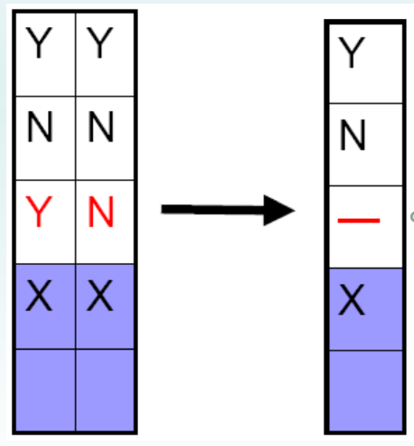
经分析发现，在 T0时刻系统是安全的，因为这时存在一个安全序列〈P2，P1，P3〉，即 只要系统按此进程序列分配资源，就能使每个进程都顺利完成。例如，将剩余的磁带机取 2 台分配给 P2，使之继续运行，待 P2完成，便可释放出 4 台磁带机，于是可用资源增至 5 台； 以后再将这些全部分配给进程 P1，使之运行，待 P1 完成后，将释放出 10 台磁带机，P3 便 能获得足够的资源，从而使 P1、P2、P3每个进程都能顺利完成。
3.由安全状态向不安全状态的转换
如果不按照安全序列分配资源，则系统可能会由安全状态进入不安全状态。例如，在 T0时刻以后，P3又请求 1 台磁带机，若此时系统把剩余 3 台中的 1 台分配给 P3，则系统便 进入不安全状态。因为此时也无法再找到一个安全序列，例如，把其余的 2 台分配给 P2， 这样，在 P2完成后只能释放出 4 台，既不能满足 P1尚需 5 台的要求，也不能满足 P3尚需 6 台的要求，致使它们都无法推进到完成，彼此都在等待对方释放资源，即陷入僵局，结果 导致死锁。类似地，如果我们将剩余的 2 台磁带机先分配给 P1或 P3，也同样都无法使它们 推进到完成，因此，从给 P3分配了第 3 台磁带机开始，系统便又进入了不安全状态。由此 可见，在 P3请求资源时，尽管系统中尚有可用的磁带机，但却不能分配给它，必须让 P3一 直等待到 P1和 P2完成，释放出资源后再将足够的资源分配给 P3，它才能顺利完成。
3.7.2 利用银行家算法避免死锁⭐
1.银行家算法中的数据结构
(1) 可利用资源向量 Available。这是一个含有 m 个元素的数组，其中的每一个元素代 表一类可利用的资源数目，其初始值是系统中所配置的该类全部可用资源的数目，其数值 随该类资源的分配和回收而动态地改变。如果 Available[j]=K，则表示系统中现有 R j类资源 K 个。
(2) 最大需求矩阵 Max。这是一个 n×m 的矩阵，它定义了系统中 n 个进程中的每一个 进程对 m 类资源的最大需求。如果 Max[i,j]=K，则表示进程 i 需要 Rj 类资源的最大数目 为 K。
(3) 分配矩阵 Allocation。这也是一个 n×m 的矩阵，它定义了系统中每一类资源当前已 分配给每一进程的资源数。如果 Allocation[i,j]=K，则表示进程 i 当前已分得 R j类资源的数 目为 K。
(4) 需求矩阵 Need。这也是一个 n×m 的矩阵，用以表示每一个进程尚需的各类资源数。 如果 Need[i,j]=K，则表示进程 i 还需要 R j类资源 K 个，方能完成其任务。 上述三个矩阵间存在下述关系：
2.⭐银行家算法
设 Request i是进程 Pi的请求向量，如果
xxxxxxxxxxRequesti[j] = K
，表示进程 P i需要 K 个 R j类型 的资源。当 P i发出资源请求后，系统按下述步骤进行检查：
(1) 如果
xxxxxxxxxxRequest i[j] ≤ Need[i,j]
，便转向步骤(2)否则认为出错，因为它所需要的资源 数已超过它所宣布的最大值。
(2) 如果
xxxxxxxxxxRequesti [j] ≤ Available[j]
，便转向步骤(3)；否则，表示尚无足够资源，Pi 须 等待。
(3) 系统试探着把资源分配给进程 Pi，并修改下面数据结构中的数值：
xxxxxxxxxxAvailable[j] = Available[j]-Request i[j]；Allocation[i,j] = Allocation[i,j]+Request i[j]；Need[i,j] = Need[i,j]-Request i[j]；
(4) 系统执行安全性算法，检查此次资源分配后系统是否处于安全状态。若安全，才正式将资源分配给进程 Pi，以完成本次分配；否则，将本次的试探分配作废，恢复原来的资源分配状态，让进程 Pi等待。
3.⭐安全性算法
系统所执行的安全性算法可描述如下：
(1) 设置两个向量：
- ① 工作向量 Work，它表示系统可提供给进程继续运行所需的各类资源数目，它含有 m 个元素，在执行安全算法开始时，Work:=Available。
- ② Finish，它表示系统是否有足够的资源分配给进程，使之运行完成。开始时先做 Finish[i]:=false；当有足够资源分配给进程时，再令 Finish[i]:=true。
(2) 从进程集合中找到一个能满足下述条件的进程：
①
xxxxxxxxxxFinish[i]=false；②
xxxxxxxxxxNeed[i,j]≤Work[j]；若找到，执行步骤(3)，否则，执行步骤(4)
(3) 当进程 Pi获得资源后，可顺利执行，直至完成，并释放出分配给它的资源，故应 执行：
xxxxxxxxxxWork[j] = Work[j]+Allocation[i,j]；Finish[i] = true；go to step 2；
(4) 如果所有进程的 Finish[i] = true 都满足，则表示系统处于安全状态；否则，系统处于 不安全状态。
4.银行家算法之例
假定系统中有五个进程{P0，P1，P2，P3，P4}和三类资源{A，B，C}，各种资源的数量 分别为 10、5、7，在 T0时刻的资源分配情况如图所示。
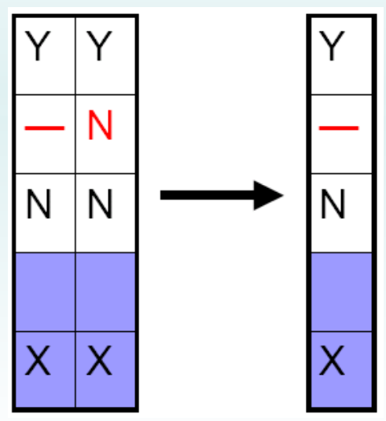
(1) T0时刻的安全性：利用安全性算法对 T0时刻的资源分配情况进行分析(见图 3-17 所 示)可知，在 T0时刻存在着一个安全序列{P1，P3，P4，P2，P0}，故系统是安全的。

(2) P1请求资源：P1发出请求向量 Request1(1，0，2)，系统按银行家算法进行检查：
①
xxxxxxxxxxRequest1(1，0，2) ≤ Need1(1，2，2)②
xxxxxxxxxxRequest1(1，0，2) ≤ Available1(3，3，2)③ 系统先假定可为 P1分配资源，并修改 Available，Allocation1和 Need1向量，由此形 成的资源变化情况如图 3-16 中的圆括号所示
④ 再利用安全性算法检查此时系统是否安全。如图 3-18 所示。

由所进行的安全性检查得知，可以找到一个安全序列{P1，P3，P4，P2，P0}。因此，系 统是安全的，可以立即将 P1所申请的资源分配给它。
(3) P4请求资源：P4发出请求向量 Request4(3，3，0)，系统按银行家算法进行检查：
①
xxxxxxxxxxRequest4(3，3，0) ≤ Need4(4，3，1)；②
xxxxxxxxxxRequest4(3，3，0) ≤ Available(2，3，0)，让 P4等待。
(4) P0请求资源：P0发出请求向量 Requst0(0，2，0)，系统按银行家算法进行检查：
①
xxxxxxxxxxRequest0(0，2，0) ≤ Need0(7，4，3)；②
xxxxxxxxxxRequest0(0，2，0)≤Available(2，3，0);③ 系统暂时先假定可为 P0分配资源，并修改有关数据，如图 3-19 所示。

(5) 进行安全性检查：可用资源 Available(2，1，0)已不能满足任何进程的需要，故系统进入不安全状态，此时系统不分配资源。
问题：如果在银行家算法中，把 P0发出的请求向量改为 Request0(0，1，0)，系统是否能将资源分配给它？
3.8 死锁的检测和解除
3.8.1 死锁的检测
1.资源分配图
系统死锁可利用资源分配图来描述。该图是由一组结点 N 和一组边 E 所组成的一个对偶 G=(N1E)，它具有下述形式的定义和限制：
(1) 把 N 分为两个互斥的子集，即一组进程结点 P={p1，p2，…，pn}和一组资源结点 R={r1，r2，…，rn}，N=P∪R。在图 3-20 所示的例子中，P={p1，p2}，R={r1，r2}， N={r1，r2}∪{p1，p2}。
(2) 凡属于E中的一个边 e∈E，都连接着 P 中的一个结点和 R 中的一个结点。
- e={pi，rj} 是资源请求边，由进程 pi指向资源 rj，它表示进程 pi请求一个单位的 rj资源。
- e={rj，pi}是资源分配边，由资源 rj指向进程 pi，它表示把一个单位的资源 rj分配给进程 pi。
- 图 3-13 中示出了两个请求边和两个分配边，即 E={(p1，r2)，(r2，p2)，(p2，r1)，(r1，p1)}。
- 我们用圆圈代表一个进程，用方框代表一类资源。由于一种类型的资源可能有多个，我们用 方框中的一个点代表一类资源中的一个资源。
- 此时，请求边是由进程指向方框中的 rj，而分配边则应始于方框中的一个点。
- 图中，p1 进程已经分得了两个 r1 资源， 并又请求一个 r2 资源；p2 进程分得了一个 r1 和一 个 r2资源，并又请求 r1资源。
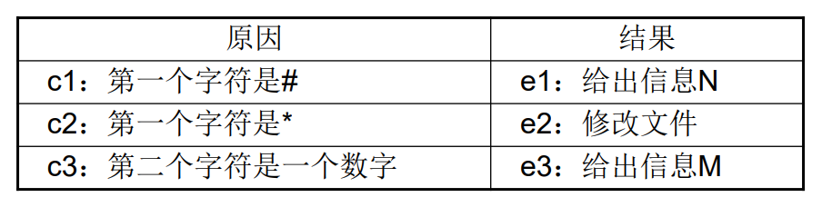
2.死锁定理
我们可以利用把资源分配图加以简化的方法(图 3-21)，来检测当系统处于 S 状态时是否 为死锁状态。简化方法如下：
(1) 在资源分配图中，找出一个既不阻塞又非独立的进程结点 Pi。在顺利的情况下，Pi 可获得所需资源而继续运行，直至运行完毕，再释放其所占有的全部资源，这相当于消去 pi所求的请求边和分配边，使之成为孤立的结点。在图 3-21(a)中，将 p1的两个分配边和一 个请求边消去，便形成图(b)所示的情况。

(2) p1释放资源后，便可使 p2获得资源而继续运行，直至 p2完成后又释放出它所占有 的全部资源，形成图(c)所示的情况。
(3) 在进行一系列的简化后，若能消去图中所有的边，使所有的进程结点都成为孤立结 点，则称该图是可完全简化的；若不能通过任何过程使该图完全简化，则称该图是不可完 全简化的。
死锁定理：当且仅当 S 状态的资源分配图是不可完全简化的。（S 为死锁状态的充分条件）
3.8.2 死锁的解除
常采用解除死锁的两 种方法是：
(1) 剥夺资源。从其它进程剥夺足够数量的资源给死锁进程，以解除死锁状态。
(2) 撤消进程。按照某种顺序逐个地撤消进程，直至有足够的资源可用，使死锁状态消除为止。
在出现死锁时，可采用各种策略来撤消进程。例如，为解除死锁状态所需撤消的进程数目最小；或者，撤消进程所付出的代价最小等。
4.存储器管理
4.1 存储器的层次结构
4.1.1 存储器的多层结构
存储层次至少应具有三级：最高层为CPU寄存器，中间为主存，最底层是辅存

4.1.2 各类存储器的基本作用
寄存器：寄存器和主存储器又被称为可执行存储器，寄存器具有与处理机相同的速度，完全能与CPU协调工作，但价格却十分昂贵，因此容量不可能做得很大。
主存储器：主存储器简称内存或主存，用于保存进程运行时的程序和数据。
高速缓存：它是介于寄存器和主存储器之间的存储器，主要用于备份主存中较常用的数据（局部性原理）），以减少处理机对主存储器的访问次数，这样可大幅度地提高程序执行速度，访问速度快于主存储器
局部性原理：程序在执行时呈现出局部性规律，即在一较短时间内，程序的执行仅局限于某个部分
磁盘缓存：由于磁盘的I/O速度远低于对主存的访问速度，为了缓和两者之间在速度上的不匹配，而设置了磁盘缓存。
作业： 暂时存放频繁使用的一部分磁盘数据和信息，以减少访问磁盘的次数。
但磁盘缓存与高速缓存不同，它本身并不是一种实际存在的存储器，而是利用主存中的部分存储空间暂时存放从磁盘中读出(或写入)的信息，主存也可以看作是辅存的高速缓存
4.2 程序的装入与链接
用户程序要在系统中运行，通常都要经过以下几个步骤：

4.2.1 程序的装入
绝对装入方式：
当计算机系统很小，且仅能运行单道程序时，完全有可能知道程序将驻留在内存的什么位置，此时可以采用绝对装入方式。用户程序经编译后，将产生绝对地址(即物理地址)的目标代码。
可重定位装入方式
绝对装入方式只能将目标模块装入到内存中事先指定的位置，这只适用于单道程序环境。
而在多道程序环境下，编译程序不可能预知经编译后所得到的目标模块应放在内存的何处，而应采用可重定位装入方式，它可以根据内存的具体情况将装入模块装入到内存的适当位置。
对于用户程序编译所形成的若干个目标模块，它们的起始地址（即逻辑地址）通常都是从0开始的，程序中的其它地址也都是相对于起始地址计算的。
注意：在采用可重定位装入程序将装入模块**装入内存后，会使装入模块中的所有逻辑地址与实际装入内存后的物理地址不同，需要修改用户程序中的数据地址和指令地址。**
通常，把在装入时对目标程序中指令和数据地址的修改过程称为重定位。

动态运行时装入方式
可重定位装入方式可将装入模块装入到内存中任何允许的位置，故可用于多道程序环境。但该方式并不允许程序运行时在内存中移动位置。
然而实际情况是，在运行过程中程序在内存中的位置可能经常变化，例如在具有对换功能的系统中，一个进程可能北多次换入换出，每次换入后的位置通常是不同的，这种情况下就应该采用动态运行时装入方式。
实现：动态运行时装入方式在把装入模块装入内存后，等到程序真正要执行时才把装入模块的逻辑地址转换为物理地址，因此，装入内存后的所有地址仍然是逻辑地址。
4.2.2 程序的链接
链接程序的功能是把编译后产生的一组目标模块以及它们需要的库函数装配成一个完整的装入模块。
静态链接
在程序运行之前，先将各目标模块及它们所需的库函数链接成一个完整的装配模块，以后不再拆开。
在将这几个目标模块装配成一个装入模块时，须解决以下两个问题： (1) 对相对地址进行修改。 M-1 => L+M-1 (2) 变换外部调用符号。CALL B => JSR "L"

装入时动态链接
这是指将用户源程序编译后所得到的一组目标模块，在装入内存时，采用边装入边链接的链接方式。即在装入一个目标模块时，若发生一个外部模块调用事件，将引起装入程序去找出相应的外部目标模块，并将它装入内存，还要修改目标模块中的相对地址。
优点： (1) 便于修改和更新。由于各目标模块是分开存放的，所以便于修改和更新各目标模块 (2) 便于实现对目标模块的共享。OS很容易将一个目标模块链接到几个应用模块上，实现多个应用程序对该模块的共享。
运行时动态链接
在许多情况下，应用程序在运行时，每次要运行的模块可能是不相同的。但由于事先无法知道本次要运行哪些模块，直接的办法是将所有可能要运行到的模块全部都装入内存，并在装入时全部链接在一起，这是低效的，因为往往会有部分目标模块根本就不运行。
比较典型的例子是作为错误处理用的目标模块，如果程序在整个运行过程中都不出现错误，则显然就不会用到该模块。
运行时动态链接是，将对某些模块的链接推迟到程序执行时才进行。具体来说，是程序在执行过程中，发现一个被调用模块未装入内存时，立即由OS去找到该模块并装入内存，链接到调用者的模块上。
优点：在执行过程中未被用到的目标模块就不会被调入内存和链接到装入模块，这样不仅能加快程序的装入速度，而且可以节省大量内存空间。
4.3 连续分配存储管理方式 ⭐
四种连续分配方式：单一连续分配、固定分区分配、动态分区分配、动态可重定位分区分配
4.3.1 单一连续分配
在单道程序环境下，当时的存储器管理方式是把内存分为系统区和用户区两部分，系统区仅提供给OS使用，它通常是放在内存的低址部分。而在用户区内存中，仅装有一道用户程序，即整个内存的用户空间由该程序独占。这样的存储器分配方式被称为单一连续分配方式
4.3.2 固定分区分配
将用户空间划分为若干各固定大小的区域，每个分区只装入一道作业。
划分分区的方法： 可用下述两种方法将内存的用户空间划分为若干个固定大小的分区： (1) 分区大小相等(指所有的内存分区大小相等)：缺乏灵活性，当程序太小会造成内存空间的浪费，程序太大又不足以载入程序。 (2) 分区大小不等：可根据程序大小，为之分配适当的分区
内存分配：
为了便于内存分配，通常将分区按其大小进行排队，并为之建立一张分区使用表，其中各表项包括每个分区的起始地址、大小及状态(是否已分配)

固定分区分配是最早可用于多道程序系统的存储管理方式。
4.3.3 动态分区分配
动态分区分配又称为可变分区分配，它是根据进程的实际需要，动态地为之分配内存空间。
动态分区分配中的数据结构
常用的数据结构有以下两种形式：
① 空闲分区表，在系统中设置一张空闲分区表，用于记录每个空闲分区的情况。每个空闲分区占一个表目，表目中包括分区号、分区大小和分区始址等数据项

② 空闲分区链。为了实现对空闲分区的分配和链接，在每个分区的起始部分设置一些用于控制分区分配的信息，以及用于链接各分区所用的前向指针，在分区尾部则设置一后向指针。通过前、后向链接指针，可将所有的空闲分区链接成一个双向链。
当分区被分配出去后，状态位由0改为1，此时前后指针已无意义。

动态分区分配算法 为把一个新作业装入内存，须按照一定的分配算法，从空闲分区表或空闲分区链中选出一分区分配给该作业。
（1）顺序式搜索算法（4种）
①首次适应算法(FF)：FF从链首开始顺序查找，直至找到一个大小能满足要求的空闲分区为止。
②循环首次适应算法(NF)：NF从上次找到的空闲分区的下一个空闲分区开始查找，直至找到一个能满足要求的空闲分区
③最佳适应算法(BF)：BF总是把能满足要求、又是最小的空闲分区分配给作业。该算法要求将所有的空闲分区按其容量以从小到大的顺序形成一空闲分区链
④最坏适应算法(WF)：WF总是挑选一个最大的空闲区，从中分割一部分存储空间给作业使用，以至于存储器中缺乏大的空闲分区
（2）索引式搜索算法（3种）
①快速适应算法(quick fit)：该算法又称为分类搜索法，是将空闲分区根据其容量大小进行分类，对于每一类具有相同容量的所有空闲分区，单独设立一个空闲分区链表。同时，在内存中设立一张管理索引表，其中的每一个索引表项对应了一种空闲分区类型，并记录了该类型空闲分区链表头指针。
优点：不会对分区进行分割，能保留大的分区，也不会产生内存碎片，查找效率高
缺点：分区归还内存时算法复杂，系统开销较大。此外，该分配空闲分区时是以进程为单位的，每一个分区只属于一个进程，因此在为进程分配的一个分区中存在一定的浪费。
②伙伴系统(buddy system)：该算法规定，无论已分配分区或空闲分区，其大小均为2的k次幂(k为整数，l≤k≤m)。通常2^m是整个可分配内存的大小(也就是最大分区的大小)。
假设系统的可利用空间容量为2^m 个字，则系统开始运行时，整个内存区是一个大小为2^m的空闲分区。在系统运行过程中，由于不断地划分，将会形成若干个不连续的空闲分区，将这些空闲分区按分区的大小进行分类。
对于具有相同大小的所有空闲分区，单独设立一个空闲分区双向链表，这样，不同大小的空闲分区形成了k个空闲分区链表。
在伙伴系统中，对于一个大小为2^k，地址为x的内存块，其伙伴块的地址则用buddyk(x)表示，其通式为：

公式推导：设一个内存块地址为x，大小为2^(k+1)，我们知道伙伴块是由一个内存块划分为两个大小相同的内存块而来，所以将该内存块划分为两个内存块，一个内存块1地址为x1, x1=x，其伙伴块就是内存块2地址为x2, x2=x+2^k。又因为在伙伴系统中，地址较小的伙伴块，其地址数值等于其大小，或者地址数值为0，即x=0，或x=2^k，2^k为其大小，因此其地址数值模其大小一定为0。（ 在本例中其大小为2^(k+1)）
对内存块1来说，它就是地址较小的那一块，因此 x1 MOD 2^(k+1) = 0，其伙伴块地址就是x1 + 2^k = x + 2^k，即伙伴块2的地址；
对内存块2来说，x2 MOD 2^(k+1) = (x+2^k) MOD 2^(k+1) = 2^k，其伙伴块地址就是x2 - 2^k = x，即伙伴块1的地址。
由此，得证。
③
分区分配操作
分配内存：
系统应利用某种分配算法，从空闲分区链(表)中找到所需大小的分区。设请求的分区大小为u.size，表中每个空闲分区的大小可表示为m.size。
⭐分配过程：
找到一个分区后，若m.size-u.size <= size，则说明剩余部分太小，不再分割，将整个分区分配给请求者，其中size为事先规定地不再分割地剩余分区的大小。
否则，将该分区划出一块u.size的空间分配出去，剩下部分仍然留在空闲分区链中，然后将分配去的首址返回给调用者。

回收内存：
当进程运行完毕释放内存时，系统根据回收区的首址，从空闲区链(表)中找到相应的插入点，此时可能出现以下四种情况之一：
(1) 回收区与插入点的前一个空闲分区F1相邻接，见图(a)。此时应将回收区与插入点的前一分区合并，不必为回收分区分配新表项，而只需修改其前一分区F1的大小。 (2) 回收分区与插入点的后一空闲分区F2相邻接，见图(b)。此时将两分区合并，形成新的空闲分区，但用回收区的首址作为新空闲区的首址，大小为两者之和。
(3) 回收区同时与插入点的前、后两个分区邻接，见图(c)。此时将三个分区合并，使用F1的表项和F1的首址，取消F2的表项，大小为三者之和。

(4) 回收区既不与F1邻接，又不与F2邻接。这时应为回收区单独建立一个新表项，填写回收区的首址和大小，并根据其首址插入到空闲链中的适当位置。

4.3.4 动态可重定位分区分配
1.紧凑
连续分配方式的一个重要特点是，一个系统或用户程序必须被装入一片连续的内存空间中。当一台计算机运行了一段时间后，它的内存空间将会被分割成许多小的分区，而缺乏大的空闲空间。即使这些分散的许多小分区的容量总和大于要装入的程序，但由于这些分区不相邻接，也无法把该程序装入内存
紧凑的概念：通过移动内存中作业的位置，把原来多个分散的小分区拼接成一个大分区的方法，称为紧凑。
紧凑带来的问题：经过紧凑后的用户程序在内存中的位置发生了变化，如果不对程序和数据的地址进行变换，程序无法执行。因此，每次紧凑后，都必须对移动了的程序进行重定位，而系统在运行过程中经常会进行紧凑，这将大大影响系统的效率。

2.动态重定位
动态运行时装入的方式中，作业装入内存后的所有地址仍然都是相对(逻辑)地址。
而将相对地址转换为绝对(物理)地址的工作被推迟到程序指令要真正执行时进行。
为使地址的转换不会影响到指令的执行速度，必须有硬件地址变换机构的支持，即须在系统中增设一个重定位寄存器，用它来存放程序(数据)在内存中的起始地址。程序在执行时，真正访问的内存地址是相对地址与重定位寄存器中的地址相加而形成的。
动态重定位的概念：地址变换过程 是在程序执行期间，随着对每条指令或数据的访问自动进行的。
动态重定位的原理：当系统进行紧凑后，使若干程序从内存某处移动到另一处，不需要对程序进行修改，只要用该程序在内存的新起始地址去置换原来的起始地址即可。

3.动态重定位分区分配算法
动态重定位分区分配算法与动态分区分配算法基本上相同，差别仅在于增加了紧凑的功能。
通常，当该算法不能找到一个足够大的空闲分区以满足用户需求时，如果所有的小的空闲分区的容量总和大于用户的要求，这时便须对内存进行“紧凑”，将经“紧凑”后所得到的大空闲分区分配给用户。如果所有的小的空闲分区的容量总和仍小于用户的要求，则返回分配失败信息。

4.4 对换
4.4.1 多道程序环境下的对换技术
对换的引入
在多道程序环境下，一方面，在内存中的某些进程由于某事件尚未发生而被阻塞运行，但它却占用了大量的内存空间，甚至有时可能出现在内存中所有进程都被阻塞，而无可运行之进程，迫使CPU停止下来等待的情况；另一方面，却又有着许多作业，因内存空间不足，一直驻留在外存上，而不能进入内存运行。
显然这对系统资源是一种严重的浪费，且使系统吞吐量下降。 为解决这一问题，系统中增设了对换设施。
对换的概念：对换是指把内存中暂时不能运行的进程或暂时不用的程序和数据换出到外存上，以便腾出足够的内存空间，再把已具备运行条件的进程或进程所需要的程序和数据换入内存。
引入对换的好处：改善了内存利用率，提高了处理机的利用率和系统的吞吐量。
对换的类型
在每次对换时，都是将一定数量的程序或数据换入或换出内存。根据每次对换时所对换的数量，可将对换分为如下两类： （1） 整体对换；以整个进程为单位进行对换，故称为进程对换或整体对换，在此只介绍整体对换。 （2）页面(分段)对换：以进程的一个页面或分段为单位进行对换，是实现请求分页和请求分段式存储管理的基础，目的式为了支持虚拟存储系统。
为了实现进程对换，系统必须能实现：对对换空间的管理、进程的换出和进程的换入。
4.4.2 对换空间的管理
对换空间管理的主要目标
在具有对换功能的OS中，通常把磁盘空间分为文件区和对换区两部分。
（1）对文件区管理的主要目标：提高文件存储空间的利用率，然后才是提高对文件的访问速度。对文件区空间采用离散分配方式
（2）对对换空间管理的主要目标：提高进程换入和换出的速度，然后才是提高文件存储空间的利用率。对对换区空间采用连续分配方式
对换区空闲盘块管理中的数据结构
数据结构用于记录外存对换区中的空闲盘块的使用情况。其数据结构包括空闲分区表或空闲分区链。
在空闲分区表的每个表目包含：对换区的首址及其大小，分别用盘块号和盘块数表示
对换空间的分配与回收
由于对换分区的分配采用的是连续分配方式，因而对换空间的分配与回收与动态分区方式时的内存分配与回收方法类似。其分配算法可以是首次适应算法、循环首次适应算法或最佳适应算法等。具体的分配操作也与图4-8中内存的分配过程相同。
4.4.3 进程的换出与换入
进程的换出
对换进程在实现进程换出时，是将内存中的某些进程调出至对换区。换出过程可分为以下两步： (1) 选择被换出的进程：首先选择处于阻塞状态或睡眠状态的进程，应优先选择优先级低的进程。如过没有，则选择优先级最低的就绪进程。 (2) 进程换出过程：先申请对换空间，若成功则启动磁盘，将该进程的程序和数据传送到磁盘的对换区。若传送过程没有错误，则回收该进程的内存空间，
· 并修改该进程的PCB和内存分配表等数据结构。如果内存中还有可换出的进程，则继续进行换出，直到内存中无阻塞进程为止。
进程的换入
对换进程将定时执行换入操作，它首先查看PCB集合中所有进程的状态，从中找出“就绪”状态但已换出的进程。当有许多这样的进程时，它将选择其中已换出到磁盘上时间最久(必须大于规定时间，如2 s)的进程作为换入进程，为它申请内存。如果申请成功，可直接将进程从外存调入内存；如果失败，则需先将内存中的某些进程换出，腾出足够的内存空间后，再将进程调入。
4.5分页存储管理方式⭐
离散存储方式的引出：如果允许将一个进程直接分散装入到许多不相邻接的分区中，便可以充分利用内存空间，而不用再进行紧凑。
内存的3种离散分配管理方式：
(1) 分页存储管理方式：将用户程序的地址空间分为若干个固定大小的区域，称为页。同时将内存空间分为若干各物理块，页和块的大小系统。这样可将用户程序的任一页放入任一物理块，实现了离散分配 (2) 分段存储管理方式：把用户程序的地址空间分为若干该格大小不同的段，每段可定义一组相对完整的信息。分配时以段位单位，这些段在内存中可不相邻接。
(3) 段页式存储管理方式 ：结合分页和分段两种存储管理方式的产物。
4.5.1 分页存储管理的基本方法
页面和物理块
(1) 页面：
分页存储管理将紧凑的逻辑地址空间分为若干各页，每页加以编号。同时把内存的物理地址空间分成若干各块，每块加以编号。在为进程分配内存时，以块为单位，将进程的若干页分别装入到多个可以不相邻接的物理块中。
(2) 页面大小：
页面大小过小可以减少内存碎片，提高内存利用率，但会造成每个进程占用较多的页面，导致进程页表过长占用大量内粗；页面大小过大可以减少页表长度，提高换进换出的效率，但会使业内碎片增大。
因此，页面大小应适中，且为2的幂，一般为1KB~8KB
地址结构
分页地址中的地址结构如下：页号+页内地址

对某特定机器，其地址结构是一定的。若给定一个逻辑地址空间中的地址为A，页面的大小为L，则页号P和页内地址d可按下式求得
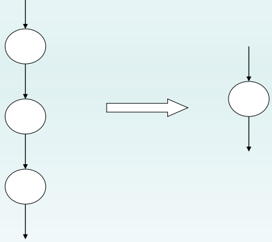
例如，某系统页面大小为1KB，设A = 2170 B ，则P = INT(2170 / 1024) = 2, d = 2170 MOD 1024 = 122
页表
在分页系统中，允许将进程的各个页离散地存储在内存的任一物理块中，为保证进程仍然能够正确地运行，即能在内存中找到每个页面所对应的物理块，系统又为每个进程建立了一张页面映像表，简称页表

页表的作用：实现从页号到物理块号的地址映射
4.5.2 地址变换机构（逻辑地址->物理地址）
地址变换机构的任务实际上是将逻辑地址的页号转换为内存中的物理块号，又因为页表的作用就是实现页号到物理块号的变换，因此，地址变换任务是借助于页表实现的。
基本的地址变换机构 进程在运行期间，需要对程序和数据的地址进行变换，即将用户地址空间中的逻辑地址变换为内存空间中的物理地址，由于它执行的频率非常高，每条指令的地址都需要进行变换，因此需要采用硬件来实现，一般是寄存器。
因寄存器成本较高，所以系统中一般只设置一个页表寄存器PTR，用于存放页表在内存的始址和页表的长度。程序未执行时，页表存放在本进程的PCB中，当被调度时，才将页表装入寄存器中。
进程访问数据的过程：
先将页号P与页表长度M比较。 ①若越界，即 P≥M，则表示地址越界并中断。 ② 若未越界，则将页表始址与页号和页表项长度的乘积相加，便得到该表项在页表中的位置，从中得到该页的物理块号在内存的地址，装入物理地址寄存器。 将有效地址中的页内地址送入物理地址寄存器的块内地址字段中，即可得到要访问的内存物理地址。

具有快表的地址变换机构
由于页表是存放在内存中的，这使CPU在每存取一个数据时，都要两次访问内存。第一次是访问内存中的页表，从中找到指定页的物理块号，再将块号与页内偏移量W拼接，以形成物理地址。第二次访问内存时，才是从第一次所得地址中获得所需数据(或向此地址中写入数据)。因此，采用这种方式将使计算机的处理速度降低近1/2。可见，以此高昂代价来换取存储器空间利用率的提高，是得不偿失的。
引入快表的目的：为了提高地址变换速度
快表的概念：在地址变换机构中增设一个具有并行查询能力的特殊高速缓冲寄存器，又称为联想寄存器，或快表。
引入快表后的地址变换过程：
①在快表中查找页号P，如果有，则可以直接得到物理块号的位置，并送人物理地址寄存器。
②如果快表中没有找到页号P，则访问内存中的页表，计算物理块号的地址，再送入物理地址寄存器。同时，将该页表项存入快表。
③若快表已满，则找到一个老的且不再需要的页表项换出，再存入新的页表项。

4.5.3 访问内存的有效时间 EAT
从进程发出指定逻辑地址的访问请求，经过地址变换，到在内存中找到对应的实际物理地址单元并取出数据，所需要花费的总时间，称为内存的有效访问时间
假设访问一次内存的时间为t，在基本分页存储管理方式中，有效访问时间分为第一次访问内存时间(即查找页表对应的页表项所耗费的时间t)与第二次访问内存时间(即将页表项中的物理块号与页内地址拼接成实际物理地址所耗费的时间t)之和： EAT = t + t = 2t
在引入快表的分页存储管理方式中，通过快表查询，可以直接得到逻辑页所对应的物理块号，由此拼接形成实际物理地址，减少了一次内存访问，缩短了进程访问内存的有效时间。但是，由于快表的容量限制，不可能将一个进程的整个页表全部装入快表，所以在快表中查找到所需表项存在着命中率的问题。所谓命中率，是指使用快表并在其中成功查找到所需页面的表项的比率。这样，在引入快表的分页存储管理方式中，有效访问时间的计算公式即为： EAT= а×λ+(t+λ)(1-а)+t= 2t + λ - t × а 上式中，λ表示查找快表所需要的时间，а表示命中率，t表示访问一次内存所需要的时间。
可见，引入快表后的内存有效访问时间分为查找到逻辑页对应的页表项的平均时间а × λ + (t + λ)(1 - а)，以及对应实际物理地址的内存访问时间t。假设对快表的访问时间λ为20 ns(纳秒)，对内存的访问时间t为100 ns，则下表中列出了不同的命中率а与有效访问时间的关系：

4.5.4 两级和多级页表
两级页表
针对难于找到大的连续的内存空间来存放页表的问题，可利用将页表进行分页的方法，使每个页面的大小与内存物理块的大小相同，并为它们进行编号。
然后离散地将各个页面分别存放在不同的物理块中。同样，也要为离散分配的页表再建立一张页表，称为外层页表，在每个页表项中记录页面的物理块号。
外层页内地址存放的时页表PT所在的物理块号，页内地址存放的时PT对应的物理块号。

为了方便实现地址变换，在地址变换机构中，同样需要增设一个外层页表寄存器，用于存放外层页表的始址，并利用逻辑地址中的外层页号作为外层页表的索引，从中找到指定页表分页的始址，再利用P2作为指定页表分页的索引，找到指定的页表项，其中即含有该页在内存的物理块号，用该块号P和页内地址d即可构成访问的内存物理地址。

多级页表
对于32位的机器，采用两级页表结构是合适的，但对于64位的机器，采用两级页表是否仍然合适，须做以下简单分析。如果页面大小仍采用4 KB即4096B，那么还剩下52位，假定仍按物理块的大小(4096位)来划分页表，则将余下的42位用于外层页号。此时在外层页表中可能有4096 G个页表项，要占用16 384 GB的连续内存空间，显然是不合适的。
4.5.5 反置页表
4.6 分段存储管理方式⭐
当OS由单道向多道发展时，存储管理方式便由单一连续分配发展为固定分区分配。
4.6.1 分段存储管理方式的引入
为什么要引入分段式存储管理方式？
- 方便编程 通常，程序员们编写的程序访问的逻辑地址是由段号和段内偏移量决定的，这不仅可以方便程序员编程，也可使程序非常直观，更具可读性。
- 信息共享 在实现对程序和数据的共享时，是以信息的逻辑单位为基础的。段可以是信息的逻辑单位，因此为共享过程建立一个独立的段就极大简化了共享的实现。
- 信息保护 信息保护同样是以信息的逻辑单位为基础的，因此分段管理方式能更有效和方便的实现对信息的保护功能。
- 动态增长 在实际应用中，往往存在着一些段，由于数据量的不断增加，而使数据段动态增长，相应地它所需要的存储空间也会动态增加。对此，很难采取预先多分配的方法进行解决，而分段存储管理方式能较好的解决这一问题。
- 动态链接 运行时动态链接，即在程序运行过程中，当需要调用某个目标程序时，才将该段调入内存并进行链接。 可见，动态链接要求的是以目标程序（即段）作为链接的基本单位，因此，分段存储管理方式非常适合动态链接。
4.6.2 分段系统的基本原理
分段
在分段存储管理方式中，作业的地址空间被划分为若干个段，每个段定义了一组逻辑信息。
可以用一个段号代替段名，每个段都从0开始编址，并采用一段连续的地址。
段的长度又相应的逻辑信息组的长度决定，因此各段长度不相等。
逻辑地址由段号和段内地址组成 ：

段表
在前面所介绍的动态分区分配方式中，系统为整个进程分配一个连续的内存空间。而在分段式存储管理系统中，则是为每个分段分配一个连续的分区。进程中的各个段，可以离散地装入内存中不同的分区中。为保证程序能正常运行，就必须能从物理内存中找出每个逻辑段所对应的位置。

段表的概念：系统为每个进程建立的一张段映射表，每个表项记录了该段在内存的起始地址和段长，用于实现从逻辑地址段到物理内存区的映射。
地址变换机构
为了实现进程从逻辑地址到物理地址的变换功能，在系统中设置了段表寄存器，用于存放段表始址和段表长度TL。
在进行地址变换时，系统将逻辑地址中的段号与段表长度TL进行比较。若S>TL，表示段号太大，是访问越界，于是产生越界中断信号。
若未越界，则根据段表的始址和该段的段号，计算出该段对应段表项的位置，从中读出该段在内存的起始地址。然后，再检查段内地址d是否超过该段的段长SL。若超过，即d>SL，同样发出越界中断信号。若未越界，则将该段的基址d与段内地址相加，即可得到要访问的内存物理地址。图4-20示出了分段系统的地址变换过程。

⭐分页和分段有什么区别?
页是信息的物理单位。
采用分页存储管理方式是为了实现离散分配方式，提高内存利用率，仅仅是系统管理上的需要，对用户是不可见的。
分段存储管理方式中的段则是信息的逻辑单位，通常是一组意义完整的信息，分段的目的是更好的满足用户的需要。
页的大小固定且由系统决定。
在采用分页存储管理方式的系统中，用户程序的逻辑地址由硬件决定，因而在系统中页面大小是固定的。而段的长度取决于用户编写的程序。
分页的用户程序地址空间是一维的。
在分页系统中，用户程序的地址是单一的线性地址可见。而分段式用户的行为，所以在分段系统站用户程序的地址可见是二维的。
4.6.3 信息共享
1.分页系统中对程序和数据的共享
在分页系统中，虽然也能实现对程序和数据的共享，但远不如分段系统来得方便。我们通过一个例子来说明这个问题。

2.分段系统中程序和数据的共享
在分段系统中，由于是以段为基本单位的，不管该段有多大，我们都只需为该段设置一个段表项，因此使实现共享变得非常容易。我们仍以共享editor为例，此时只需在(每个)进程1和进程2的段表中，为文本编辑程序设置一个段表项，让段表项中的基址(80)指向editor程序在内存的起始地址。

4.6.4 段页式存储管理方式
1.基本原理
段页式系统的基本原理是分段和分页原理的结合，即先将用户程序分成若干个段，再把每个段分成若干个页，并为每一个段赋予一个段名。图4-23(a)示出了一个作业地址空间的结构。该作业有三个段：主程序段、子程序段和数据段；页面大小为 4 KB。在段页式系统中，其地址结构由段号、段内页号及页内地址三部分所组成

在段页式系统中，为了实现从逻辑地址到物理地址的变换，系统中需要同时配置段表和页表。段表的内容与分段系统略有不同，它不再是内存始址和段长，而是页表始址和页表长度。

2.地址变换过程
在段页式系统中，为了便于实现地址变换，须配置一个段表寄存器，其中存放段表始址和段长TL。进行地址变换时，首先利用段号S，将它与段长TL进行比较。若S < TL，表示未越界，于是利用段表始址和段号来求出该段所对应的段表项在段表中的位置，从中得到该段的页表始址，并利用逻辑地址中的段内页号P来获得对应页的页表项位置，从中读出该页所在的物理块号b，再利用块号b和页内地址来构成物理地址。图4-25示出了段页式系统中的地址变换机构。

5.虚拟存储器
5.1 虚拟存储器概述
5.1.1 常规存储器管理方式的特征和局部性原理
1.常规存储器管理方式的特征：
（1）一次性：指作业必须一次性的全部装入内存后才能开始运行
（2）驻留性：指作业被装入内存后，整个作业都一直驻留在内存中，直至作业运行结束。
这些特性带来的问题：许多在程序运行中不用或暂时不用的程序或数据占据了大量内存空间，而一些需要运行的作业又无法装入运行，浪费了内存资源。
2.局部性原理⭐
程序在执行时呈现出局部性规律，即在一较短时间内，程序的执行仅局限于某个部分，相应的，它访问的存储空间也局限于某个区域。
局限性又表现在两个方面
（1）时间局限性：如果程序中某条指令被执行，则不久后可能在此被执行。如果某数据被访问，则不久后可能再次被访问。（原因是程序中存在大量循环操作）
（2）空间局限性：如果程序访问了某个存储单元，则不久后其附近的存储单元也被访问，即程序在一段时间内访问的地址集中在一定范围之内。
5.1.2 虚拟存储器的定义和特征 ⭐
1.虚拟存储器的定义
虚拟存储器就是指具有请求调入功能和置换功能，能从逻辑上对内存容量扩充的一种存储器系统。
2.虚拟存储器的特征
（1）多次性：指一个作业的程序和数据允许被分成多次调入内存运行，即只需将当前要运行时的部分调入即可开始运行，以后需要未调入的部分才再调入。
（2）对换性：指一个作业的程序和数据允许在作业运行时换进换出，即进程运行期间，允许将暂不使用的代码和数据从内存换出，以后需要时再换进内存。
（3）虚拟性：指能够从逻辑上扩充内存容量，使用户看到的内存容量大于实际内存容量。这样就可以在小内存中运行大作业，有效改善了内存利用率。
虚拟性是以多次性和对换性为基础的，而多次性和对换性又是建立在离散分配的基础上的，是最本质的特征。
5.1.3 虚拟存储器的实现方法
1.分页请求系统：
硬件支持：请求分页的页表机制、缺页中断机构、地址变换机构
软件支持：实现请求分页的软件和实现页面置换的软件
2.分段请求系统：
硬件支持：请求分段的段表机制、却段中断机构、地址变换机构
软件支持：实现请求调段的软件和实现段置换的软件
5.2 请求分页存储管理方式 ⭐
5.2.1 请求分页中的硬件支持
1.请求页表机制
在请求 分页系统中的每个页表项如下所示：

现对其中各字段说明如下：
(1) 状态位 P：用于指示该页是否已调入内存
(2) 访问字段 A：用于记录本页在一段时间内被访问的次数，供选择换出页面时参考
(3) 修改位 M：表示该页在调入内存后是否被修改过。若未被修改，在置换该页时就不需再将该页写回到外存上；若已被修改，则必须将该页重写到外存上。简言之，M 位供置换页面时参考
(4) 外存地址：用于指出该页在外存上的地址，通常是物理块号，供调入该页时参考
2.缺页中断机构
在请求分页系统中，每当所要访问的页面不在内存时，便产生一缺页中断，请求 OS 将 所缺之页调入内存。
缺页中断与一般的中断相比，有着明显的区别：
(1) 在指令执行期间产生和处理中断信号。通常，CPU 都是在一条指令执行完后，才检查是否有中断请求到达。缺页中断是在指令执行期间，发现所要访问的指令或数据不在内存时所产生和处理的。
(2) 一条指令在执行期间，可能产生多次缺页中断。在图 4-24 中示出了一个例子。如 在执行一条指令 COPY A TO B 时，可能要产生 6 次缺页中断，其中指令本身跨了两个页面， A 和 B 又分别各是一个数据块，也都跨了两个页面。基于这些特征，系统中的硬件机构应能保存多次中断时的状态，并保证最后能返回到中断前产生缺页中断的指令处继续执行。

3.地址变换机构
请求分页系统中的地址变换机构，是在分页系统地址变换机构的基础上，再增加实现虚拟存储器的某些功能，如产生和处理缺页中断，以及从内存中换出一页的功能等等。
在进行地址变换时，首先去检索快表，试图从中找出所要访问的页。
（1）若找到，便修改页表项中的访问位。然后利用页表项中给出的物理块号和页内地址形成物理地址
（2）未找到，应到内存中去查找页表，再从找到的页表项中的状态位 P，来了解该页是否已调入内存。
若该页已调入内存，这时应将此页的页表项写入快表。当快表已满时，应先调出按某种算法所确定的页的页表项，然后再写入该页的页表项；
若该页尚未调入内存，这时应产生缺页中断，请求 OS 从外存把该页调入内存。
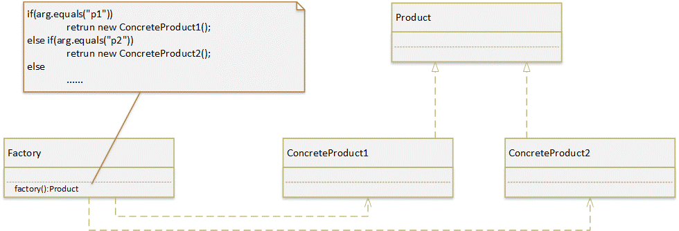
5.2.2 请求分页中的内存分配
在为进程分配内存时，将涉及到三个问题：第一，最小物理块数的确定；第二，物理 块的分配策略；第三，物理块的分配算法。
1.最小物理块数的确定
这里所说的最小物理块数，是指能保证进程正常运行所需的最小物理块数。
当系统为 进程分配的物理块数少于此值时，进程将无法运行。进程应获得的最少物理块数与计算机的硬件结构有关，取决于指令的格式、功能和寻址方式。
2.物理块的分配策略
在请求分页系统中，可采取两种内存分配策略，即固定和可变分配策略。在进行置换时，也可采取两种策略，即全局置换和局部置换。
（1) 固定分配局部置换：固定分配是指为每个进程分配一组固定数目的物理块，在进程运行期间不再改变。局部置换是指如果进程在运行中发现缺页，只能从分配给该进程的n个页面中选出一页换出，然后再调入一页，保证分配给进程的内存空间不变。
实现这种策略的困难在于：应为每个进程分配多少个物理块难以确定。若太少，会频繁地出现缺页中断，降低了系统的吞吐量；若太多， 又必然使内存中驻留的进程数目减少，进而可能造成 CPU 空闲或其它资源空闲的情况，而且在实现进程对换时，会花费更多的时间。
（2) 可变分配全局置换：可变分配是指先为每个进程分配一定数目的物理块，在进程运行期间，可根据情况做适当的增加或减少。全局置换是指如果进程在运行期间发现缺页，则将系统所保留的空闲物理中的一块分配给该进程，或从所有进程的物理块中选择一块换出，然后将所缺页调入。
在采用这种策略时，当某进程发现缺页时，由系统从空闲物理块队列中取出一个物理块分配给该进程， 并将欲调入的(缺)页装入其中。这样，凡产生缺页(中断)的进程，都将获得新的物理块。仅当空闲物理块队列中的物理块用完时，OS 才能从内存中选择一页调出，该页可能是系统中任一进程的页，这样，自然又会使那个进程的物理块减少，进而使其缺页率增加。
（3) 可变分配局部置换：这同样是基于进程的类型或根据程序员的要求，为每个进程分配一定数目的物理块， 但当某进程发现缺页时，只允许从该进程在内存的页面中选出一页换出，这样就不会影响 其它进程的运行。如果进程在运行中频繁地发生缺页中断，则系统须再为该进程分配若干附加的物理块，直至该进程的缺页率减少到适当程度为止；反之，若一个进程在运行过程中的缺页率特别低，则此时可适当减少分配给该进程的物理块数，但不应引起其缺页率的明显增加。
3.物理块分配算法
在采用固定分配策略时，如何将系统中可供分配的所有物理块分配给各个进程，可采用下述几种算法。
（1) 平均分配算法：这是将系统中所有可供分配的物理块平均分配给各个进程。
例如，当系统中有 100 个 物理块，有 5 个进程在运行时，每个进程可分得 20 个物理块。这种方式貌似公平，但实际 上是不公平的，因为它未考虑到各进程本身的大小。如有一个进程其大小为 200 页，只分 配给它 20 个块，这样，它必然会有很高的缺页率；而另一个进程只有 10 页，却有 10 个物 理块闲置未用。
（2) 按比例分配算法： 这是根据进程的大小按比例分配物理块的算法。
如果系统中共有 n 个进程，每个进程 的页面数为 Si，则系统中各进程页面数的总和为：

又假定系统中可用的物理块总数为 m，则每个进程所能分到的物理块数为 bi，将有：

b 应该取整，它必须大于最小物理块数。
（3) 考虑优先权的分配算法：在实际应用中，为了照顾到重要的、紧迫的作业能尽快地完成，应为它分配较多的内存空间。
通常采取的方法是把内存中可供分配的所有物理块分成两部分：一部分按比例地分配给各进程；另一部分则根据各进程的优先权，适当地增加其相应份额后，分配给各进程。在有的系统中，如重要的实时控制系统，则可能是完全按优先权来为各进程分配其物 理块的。
5.2.3 页面调入策略
为使进程能够正常运行，必须时间先把将要执行的那部分程序和数据所在的页面调入内存。
1.何时调入页面？ (调入页面的时机)
为了确定系统将进程运行时所缺的页面调入内存的时机，可采取预调页策略或请求调页策略。
（1）预调页策略
如果进程的许多页是存放在外存的一个连续区域中，则一次调入若干个相邻的页，会比一次调入一页更高效些。但如果调入的一批页面中的大多数都未被访问，则又是低效的。 可采用一种以预测为基础的预调页策略，将那些预计在不久之后便会被访问的页面预先调入内存。
这种策略主要用于进程的首次调入时，由程序员指出应该先调入哪些页。
（2） 请求调页策略
当进程在运行中需要访问某部分程序和数据时，若发现其所在的页面不在内存，便立即请求 OS 将其所需页面调入内存。由请求调页策略所确定调入的页，是一定会被访问的。但这种策略每次仅调入一页，故系统开销较大，增加了磁盘 I/O 的启动 频率。
2.系统从何处调入这些页面？（确定从何处调入页面）
在请求分页系统中的外存分为两部分：用于存放文件的文件区和用于存放对换页面的对换区。发生缺页请求时，系统应从何处将缺页调入内存，可分外3种情况：
(1) 系统拥有足够的对换区空间，这时可以全部从对换区调入所需页面，以提高调页速度。在进程运行前，便须将与该进程有关的文件从文件区拷贝到对换区
(2) 系统缺少足够的对换区空间，这时凡是不会被修改的文件都直接从文件区调入；而当换出这些页面时，由于它们未被修改而不必再将它们换出，以后再调入时，仍从文件区直接调入。但对于那些可能被修改的部分，在将它们换出时，必须调到对换区，以后需要时，再从对换区调入。
(3) UNIX 方式。由于与进程有关的文件都放在文件区，故凡是未运行过的页面，都应从文件区调入。曾经运行过但又被换出的页面，由于是被放在对换区，因此在下次调入时，应从对换区调入。由于 UNIX 系统允许页面共享，因此，某进程所请求的页面有可能已被其它进程调入内存，此时也就无须再从对换区调入。
3.⭐如何进行调入？（页面调入过程）
- ①每当程序所要访问的页面未在内存时，便向 CPU 发出一缺页中断，
- ②中断处理程序首先保留 CPU 环境，分析中断原因后转入缺页中断处理程序。
- ③缺页中断处理程序通过查找页表，得到该页在外存的物理块
- ④如果此时内存能容纳新页，则将所缺之页调入内存，然后修改页表
- ⑤如果内存已满，则须先按照某种置换算法从内存中选出一页准备换出。如果该页未被修改过，可不必将该页写回磁盘；但如果此页已被修改，则必须将它写回磁盘，然后再把所缺的页调入内存，并修改页表中的相应表项，置其存在位为“1”，并将此页表项 写入快表中。
- ⑥在缺页调入内存后，利用修改后的页表，去形成所要访问数据的物理地址，再去访问内存数据。
5.3 页面置换算法 ⭐
通常，把选择换出页面的算法称为页面置换算法。置换算法的好坏，将直接影响到系统的性能。
5.3.1 最佳置换算法和先进先出置换算法
1.最佳(Optimal)置换算法
最佳置换算法是一种理论上的算法。其所选择的被淘汰页面， 将是以后永不使用的，或许是在最长时间内不再被访问的页面。
由于人们目前还无法预知一个进程在内存的若干个页面 中，哪一个页面是未来最长时间内不再被访问的，因而该算法是无法实现的，但可以利用该算法去评价其它算法。
假定系统为某进程分配了三个物理块，并考虑有以下的页面号引用串： 7，0，1，2，0，3，0，4，2，3，0，3，2，1，2，0，1，7，0，1
进程运行时，先将 7，0，1 三个页面装入内存。以后，当进程要访问页面 2 时，将会 产生缺页中断。此时 OS 根据最佳置换算法，将选择页面 7 予以淘汰。这是因为页面 0 将作 为第 5 个被访问的页面，页面 1 是第 14 个被访问的页面，而页面 7 则要在第 18 次页面访 问时才需调入。下次访问页面 0 时，因它已在内存而不必产生缺页中断。当进程访问页面 3 时，又将引起页面 1 被淘汰；因为，它在现有的 1，2，0 三个页面中，将是以后最晚才被 访问的。
由图可看出，采用最佳置换算法发 生了 6 次页面置换。
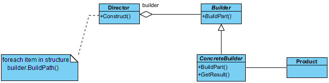
2．先进先出(FIFO)页面置换算法
该算法总是淘汰最先进入内存的页面，即选择在内存中驻 留时间最久的页面予以淘汰。
缺点：该算法与进程实际运行的规律不相适应，因为在进程中，有些页面经常被访问，FIFO 算法并不能保证这些页面不被淘汰
这里，我们仍用上面的例子，但采用 FIFO 算法进行页面置换。当进程第一次 访问页面 2 时，将把第 7 页换出，因为它是最先被调入内存的；在第一次访问页面 3 时， 又将把第 0 页换出，因为它在现有的 2，0，1 三个页面中是最老的页。
由图 可以看出， 利用 FIFO 算法时进行了 12 次页面置换，比最佳置换算法正好多一倍。
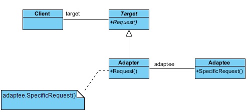
5.3.2 最近最久未使用置换算法(LRU)⭐
1.LRU置换算法的描述
FIFO 置换算法性能之所以较差，是因为它所依据的条件是各个页面调入内存的时间， 而页面调入的先后并不能反映页面的使用情况。
⭐定义：最近最久未使用(LRU)的页面置换算法，是根据页面调入内存后的使用情况进行决策的。由于无法预测各页面将来的使用情况，只能利用“最近的过去”作为“最近的未来”的近似，因此，LRU 置换算法是选择最近最久未使用的页面予以淘汰。
⭐实现：该算法赋予每个页面一个访问字段，用来记录一个页面自上次被访问以来所经历的时间 t。当须淘汰一个页面时，选择现有页面中其 t 值最大的，即最近最久 未使用的页面予以淘汰。
利用 LRU 算法对上例进行页面置换的结果如图所示。当进程第一次对页面 2 进 行访问时，由于页面 7 是最近最久未被访问的，故将它置换出去。当进程第一次对页面 3 进行访问时，第 1 页成为最近最久未使用的页，将它换出。
由图可以看出，前 5 个时间的图像与最佳置换算法时的相同，但这并非是必然的结果。因为，最佳置换算法是从“向后 看”的观点出发的，即它是依据以后各页的使用情况；而 LRU 算法则是“向前看”的，即根据各页以前的使用情况来判断，而页面过去和未来的走向之间并无必然的联系。
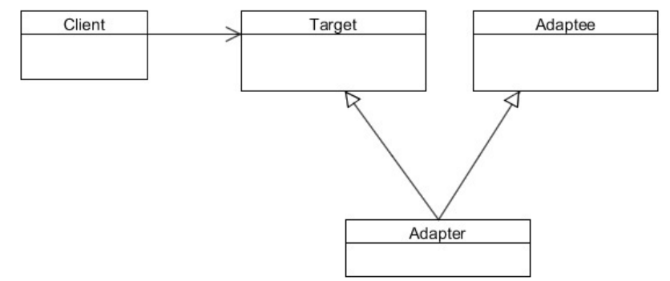
2.LRU 置换算法的硬件支持
为了解一个进程在内存中的各个页面各有多少时间未被进程访问，以及如何快速知道哪一页是最 近最久未使用的页面，须有两类硬件之一的支持：寄存器或栈
（1） 寄存器
为了记录某进程在内存中各页的使用情况，须为每个在内存中的页面配置一个移位寄存器，可表示为
当进程访问某物理块时，要将相应寄存器的 Rn－1 位置成 1。此时，定时信号将每隔一定时间将寄存器右移一位。如果我们把 n 位寄存器的数看做是一个整数，那么， 具有最小数值的寄存器所对应的页面，就是最近最久未使用的页面。
图示出了某进程 在内存中具有 8 个页面，为每个内存页面配置一个 8 位寄存器时的 LRU 访问情况。这里， 把 8 个内存页面的序号分别定为 1～8。由图可以看出，第 3 个内存页面的 R 值最小，当发生缺页时，首先将它置换出去。
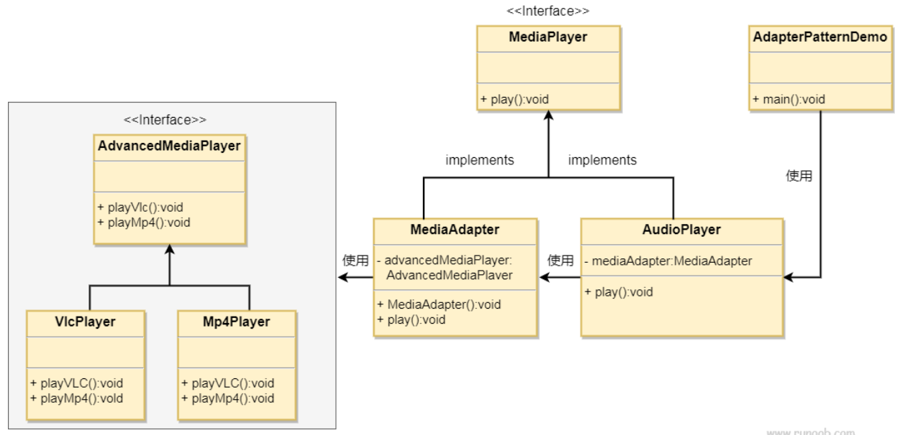
（2）栈
可利用一个特殊的栈来保存当前使用的各个页面的页面号。每当进程访问某页面时， 便将该页面的页面号从栈中移出，将它压入栈顶。因此，栈顶始终是最新被访问页面的编 号，而栈底则是最近最久未使用页面的页面号。
假定现有一进程所访问的页面的页面号序 列为： 4，7，0，7，1，0，1，2，1，2，6
随着进程的访问，栈中页面号的变化情况如图所示。在访问页面 6 时发生了缺页， 此时页面 4 是最近最久未被访问的页，应将它置换出去。

3.最少使用置换算法LFU
LFU选择在最近时期使用最少的页面作为淘汰页。LFU采用了一位寄存器方式，每次访问某页时，便将该移位寄存器的最高位置1（与LRU不同！），每隔一段时间右移一次。这样，在最近一段时间使用最少的页面是寄存器R值最小的页。
与LRU的区别：这种算法不能完全反应页面的使用情况，因为在每一时间间隔内，只用寄存器一位来记录页面使用情况，因此对于同一页来说只分为有和没有，而无法反映访问频率。
5.3.3 Clock 置换算法⭐
LRU 算法是较好的一种算法，但由于它要求有较多的硬件支持，实际应用中大多使用LRU的近似算法。Clock算法就是一种用的较多的LRU近似算法。
1.简单的 Clock 置换算法
当采用简单 Clock 算法时，只需为每页设置一位访问位，再将内存中的所有页面都通过链接指针链接成一个循环队列。当某页被访问时，其访问位被置 1。置换算法在选择一页淘汰时，只需检查页的访问位。如果是 0，就选择该页换出；若为 1，则重新将它置 0，暂不换出，而给该页第二次驻留内存的机会，再按照 FIFO 算法检查下一个页面。当检查到队列中的最后一个页面时，若其访问位仍为 1，则再返回到队首去检查第一个页面。
由于该算法是循环地检查各页面的使用情况，故称为 Clock 算法。 但因该算法只有一位访问位，只能用它表示该页是否已经使用过，而置换时是将未使用过的页面换出去，故又把该算法称为最近未用算法 NRU(Not Recently Used)。
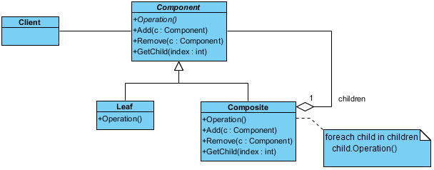
2.改进型 Clock 置换算法
在改进型 Clock 算法中，除须考虑页面的使用情况外，还要考虑置换代价。这样，选择页面换出时，既要是未使用过的页面， 又要是未被修改过的页面。
由访问位 A 和修改位 M 可以组合成下面四种类型的页面：
- 1 类(A=0，M=0)：表示该页最近既未被访问，又未被修改，是最佳淘汰页
- 2 类(A=0，M=1)：表示该页最近未被访问，但已被修改，并不是很好的淘汰页
- 3 类(A=1，M=0)：表示该页最近已被访问，但未被修改，该页有可能再被访问
- 4 类(A=1，M=1)：表示该页最近已被访问且被修改，该页可能再被访问
在内存中的每个页必定是这四类页面之一，在进行页面置换时，可采用与简单 Clock 算法相类似的算法，其差别在于该算法须同时检查访问位与修改位，以确定该页是四类页面中的哪一种。其执行过程可分成以下三步：
① 从指针所指示的当前位置开始，扫描循环队列，寻找 A=0 且 M=0 的第一类页面， 将所遇到的第一个页面作为所选中的淘汰页。在第一次扫描期间不改变访问位 A。
（①失败的原因：队列中没有A=0 M=0的页面，但是有A=1,M=0,1和A=0,M=1的页面）
② 如果①失败，即查找一周后未遇到第一类页面，则开始第二轮扫描，寻找 A=0 且 M=1 的第二类页面，将所遇到的第一个这类页面作为淘汰页。在第二轮扫描期间，将所有扫描过的页面的访问位都置 0。
（②失败的原因：页面中没有A=0 M=1的页面，但是有A=1 M=0的页面，②结束后A=1的页面被置为0，结束后页面类型：A=0,M=0 ）
③ 如果②也失败，亦即未找到第2类页面，则将指针返回到开始的位置，并将所有的访问位复 0。然后重复①，如果仍失败，必要时再重复②，此时就一定能找到被淘汰的页。
(①再次失败的原因，在②到③之间，可能有页面被修改了，即由A=0,M=0变成A=0,M=1；②一定能成功的原因：此时一定存在A=0,M=1的页面)
速记：
- ①查找00，有，淘汰，算法结束！未找到，下一步；
- ②查找01，有，淘汰，算法结束！未找到，下一步；(在查找过程中将A位复位为“0”)
- ③重复第一步
优缺点：该算法与简单 Clock 算法比较，可减少磁盘的 I/O 操作次数。但为了找到一个可置换的 页，可能须经过几轮扫描，实现该算法本身的开销将有所增加。
5.3.4 页面缓冲算法
1.影响页面换进换出效率的因素
- ①页面置换算法：一个好的页面置换算法可使进程运行过程中具有较低的缺页率，从而减少换进换出的开销。
- ②写回磁盘频率：对于已被修改的页面，换出时必须写回磁盘。写入磁盘需启动磁盘进行IO操作，这是一个不小的开销。如果能将多个页面一起写回磁盘，就可以大幅减少磁盘IO操作，减少了已修改页面换出的开销。
- ③读入内存频率：在设置已修改换出页面链表后，当有程序访问这些页面时，直接从内存中读取，无需从磁盘中读入内存，从而减少了页面换进的开销。
2.页面缓冲算法PBA
主要特点：
① 显著降低了页面换进换出的频率，使得磁盘I/O的操作次数大幅减少，从而减少了页面换进换出的开销
② 由于换进换出的开销大幅减少，所以可以采用较简单的置换策略，如FIFO，从而无需特殊硬件支持，降低了实现的成本。
5.3.5 访问内存的有效时间⭐
与基本分页存储管理方式不同，在请求分页存储管理方式中，内存有效访问时间EAT还要考虑缺页中断的处理时间。
基本分页存储管理方式：内存有效访问时间 = 访问页表时间 + 访问实际物理地址数据时间
请求分页存储管理方式：内存有效访问时间 = 访问页表时间 + 访问实际物理地址数据时间 + 缺页中断的处理时间
λ：查找快表时间 t：访问实际物理地址时间 ε：缺页中断处理时间
（1）被访问页在内存中，对应的页表项也正在快表中（快表命中）
（2）被访问页在内存中，对应的页表项不在快表中（快表不命中）
一次查找快表λ，一次读取页表t，一次更新快表λ，一次读取数据t
（3）被访问页不在内存中（缺页）
在（2）的基础上增加缺页中断处理时间
以上都没有考虑 快表的命中率a 和 缺页率f 等因素，加入这两个因素后
5.4 抖动与工作集
5.4.1 抖动
1.抖动的定义
每个进程的大部分时间都用于页面的换进和换出，而几乎不能再去做任何有效的工作，从而导致发生处理机的利用率急剧下降并趋于0的情况。
2.产生抖动的原因
产生抖动的根本原因是，同时在系统中运行的进程太多，由此分配给每个进程的物理块太少，不能满足进程正常运行的基本要求，使得每个进程在运行时频繁出现缺页，必须请求系统将所缺的页调入内存，造成在系统中排队等待页面换入换出的进程数目大幅增加。
5.4.2 工作集
1.工作集的基本概念
2.工作集的定义
工作集是指在某段时间间隔Δ内，进程实际所要访问页面的集合。
5.4.3 如何预防抖动？
采取局部置换策略：
根据局部置换策略，当进程发生缺页时，只能在分配给自己的内存空间内进行置换，不允许从其它进程去获取物理块。这样即使该进程发生了抖动，也不会影响其它进程。
缺点：当某进程发生抖动后，会长期处于磁盘IO的等待队列，延长了其它进程对磁盘的访问时间
把工作集算法融入到处理机调度中：
这样，当调度程序调入作业之前，会先检查每个进程在内存的驻留页面是否足够多，如果都足够多才会调入作业，否则会为缺页率高的作业增加物理块，而不是调入新的作业。
利用L=S准则调节缺页率：
L是缺页的平均时间，S是平均缺页服务时间，即用于置换一个页面所需的时间。
如果L远比S大，说明很少发生缺页，磁盘能力未得到充分的利用。
如果L比S小，说明频繁发生缺页，缺页的速度已超过磁盘的处理能力。只有L与S接近时，磁盘和处理机都可达到其最大利用率。
选择暂停的进程：
当多道程序度偏高时，为了防止发生抖动，系统必须减少多道程序数量，此时应暂停优先级最低的进程，如果需要，再暂停优先级较低的进程。还可以暂停一个不是很重要但较大的进程，或者暂停剩余执行时间最多的进程。
5.5 请求分段存储管理方式
5.5.1 请求分段中的硬件支持
1.段表机制
在请求分段式管理中所需的主要数据结构是段表。由于在应用程序的许多段中，只有一部分段装入内存，其余的一些段仍留在外存上，故须在段表中增加若干项，以供程序在调进、调出时参考。下面给出请求分段的段表项。

在段表项中，除了段名(号)、段长、段在内存中的起始地址外，还增加了以下诸项。
(1) 存取方式：用于标识本分段的存取属性是只执行、只读，还是允许读/写。
(2) 访问字段 A：其含义与请求分页的相应字段相同，用于记录该段被访问的频繁程度。
(3) 修改位 M：用于表示该页在进入内存后是否已被修改过，供置换页面时参考。
(4) 存在位 P：指示本段是否已调入内存，供程序访问时参考。
(5) 增补位：这是请求分段式管理中所特有的字段，用于表示本段在运行过程中是否做过动态增长
(6) 外存始址：指示本段在外存中的起始地址，即起始盘块号。
2.缺段中断机构
在请求分段系统中，每当发现运行进程所要访问的段尚未调入内存时，便由缺段中断机构产生一缺段中断信号，进入 OS 后由缺段中断处理程序将所需的段调入内存。缺段中断机 构与缺页中断机构类似，它同样需要在一条指令的执行期间，产生和处理中断，以及在一条 指令执行期间，可能产生多次缺段中断。但由于分段是信息的逻辑单位，因而不可能出现一条指令被分割在两个分段中和一组信息被分割在两个分段中的情况。由于段不是定长的，这使对缺段中断的处理要比对缺页中断的处理复杂。
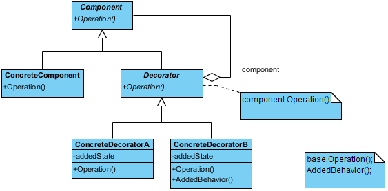
3.地址变换机构
请求分段系统中的地址变换机构是在分段系统地址变换机构的基础上形成的。因为被访问的段并非全在内存，所以在地址变换时，若发现所要访问的段不在内存，必须先将所缺的段调入内存，并修改段表，然后才能再利用段表进行地址变换。为此，在地址变换机构中又增加了某些功能，如缺段中断的请求及处理等。

5.5.2 分段的共享与保护
1.共享段表
为了实现分段共享，可在系统中配置一张共享段表，所有各共享段都在共享段表中占有一表项。
(1) 共享进程计数 count。共享段是为多个进程所需要的，当某进程不再需要而释放它时，系统并不回收该段所占内存区，仅当所有共享该段的进程全都不再需要它时，才由系统回收该段所占内存区。为了记录有多少个进程需要共享该分段， 特设置了一个整型变量 count。
(2) 存取控制字段。一个共享段，应给不同的进程以不同的存取权限。如，对于文件主，通常允许读和写；而对其它进程，则可能只允许读，甚至只允许执行。
(3) 段号。对于一个共享段，不同的进程可以各用不同的段号去共享该段。

2.共享段的分配与回收
（1）共享段的分配：在为共享段分配内存时，对第一个请求使用该共享段的进程，由系统为该共享段分配一物理区，再把共享段调入该区，同时将该区的始址填入请求进程的段表的相应项中，还须在共享段表中增加一表项，填写有关数据，把 count 置为 1；之后，当又有其它进程需要调用该共享段时，由于该共享段已被调入内存，故此时无须再为该段分 配内存，而只需在调用进程的段表中增加一表项，填写该共享段的物理地址；在共享段的段表中，填上调用进程的进程名、存取控制等，再执行 count :=count+1 操作，以表明有两 个进程共享该段。
（2）共享段的回收：当共享此段的某进程不再需要该段时，应将该段释放，包括撤消在该进程段表中共享段所对应的表项，以及执行 count = count-1 操作。若结果为 0，则须由系统回收该共享段的物理内存，以及取消在共享段表中该段所对应的表项，表明此时已没有进程使用该段。
3.分段保护
（1）越界检查：进行存储访问时，首先将逻辑地址空间的段号与段表长度进行比较，如果段号大于等于段表长度，将发出地址越界中断信号；其次，还要检查段内地址是否等于或大于段长，若大于段长，将产生地址越界中断信号，从而保证了每个进程只能在自己的地址空间内运行。
（2）存取控制检查：在段表的每个表项中，都设置了一个“存取控制”字段，用于规定对该段的访问方式。 对于共享段而言，存取控制就显得尤为重要，因而对不同的进程，应赋予不同的读写权限。这时，既要保证信息的安全性，又要满足运行需要。
6.输入输出系统
6.3 中断机构和中断处理程序⭐
6.3.1 中断简介
1.⭐什么是中断？
中断是指CPU对I/O设备发来的中断信号的一组响应。CPU暂停正在执行的程序，保留CPU环境后，自动的执行该I/O设备的中断处理程序。执行完毕后再回到断电继续执行原来的程序。也被称为外中断。
2.什么是陷入？
陷入是由CPU内部事件引起的中断，也被称为内中断。例如进程在运算中发送了上溢或下溢、程序出错和地址越界等。当系统发现陷入事件时，CPU页会暂停执行当前程序，转去执行该陷入事件的处理程序。
3.中断和陷入有什么区别？
主要区别是信号的来源，引起中断的信号来自CPU外部，引起陷入的信号来自CPU内部。
4.中断向量表
为了处理上的方便，通常把中断处理程序的入口地址放在中断向量表的表项中，并为每个设备的中断请求规定一个中断号，对应表中的一个表项。
当I/O设备发来中断请求时，由中断控制器确定该请求中断号，根据中断号查找中断向量表，获得中断处理程序的入口地址，然后转入中断处理程序执行。
5.中断优先级
经常会有多个中断信号源，每个中断源对服务要求的紧急程度不同。为此，系统需要为它们规定不同的优先级
6.对多中断源的处理方式
两种处理方式：屏蔽中断和嵌套中断
（1）屏蔽中断
当处理机正在处理一个字段时，将屏蔽所有字段，即处理机暂时不接受任何新到的中断请求，直到处理机完成当前的中断处理，然后检查有无中断发生。若有，再去处理新到的字段，若无，则返回被中断的程序。
优点：实现简单，所有字段都按顺序依次处理
缺点：不能用于对实时性要求较高的字段请求
（2）嵌套中断
在设置了中断优先级的系统中，通常这样来进行优先级控制：
- ① 当同时有多个不同优先级的中断请求时，CPU优先响应最高优先级的中断请求
- ② 高优先级的中断请求可以抢占正在运行的低优先级中断的处理机。当高优先级的中断请求执行完成后，再执行原来的中断请求程序。
6.3.2 中断处理程序
⭐中断处理程序的处理过程：
（1）测定是否有未响应的中断信号。
（2）保护被中断进程的CPU环境。
（3）转入相应的设备处理程序。由处理机对各个中断源进行测试，确定引起本次中断的I/O设备，并向发出中断信号的设备发送部分确认信号。该设备收到确认信号后，立即取消发出的中断请求信号，然后将相应的设备中断处理程序的入口地址装入程序计时器中，这样处理机就能自动转向中断处理程序。
（4）中断处理。中断处理程序首先从设备控制器中读出设备状态，判断本次中断是正常完成中断还是异常结束中断，若是前者，中断处理程序便结束处理。若是异常结束中断，则根据异常原因做相应处理。
（5）恢复CPU的现场并退出中断。
9.操作系统接口
9.4 系统调用的概念和类型
9.4.1 系统调用的基本概念
1.系统态和用户态
计算机系统设置两种状态：系统态和用户态。在实际运行时，处理机会在系统态和用户态间切换。相应的，OS将CPU的指令集分为特权指令和非特权指令：
（1）特权指令。指在系统态中运行的指令，它对内存空间的访问和访问范围基本不受限制。特权指令只允许OS使用，不允许应用程序使用。
（2）非特权指令。指在用户态允许的指令，它只能完成一般性的操作和任务，不能对系统的硬件和软件直接进行访问，对内存访问范围局限于用户空间。这样可以防止应用程序的运行异常对系统造成破坏。
2.系统调用
提供系统调用的目的：使应用程序可以通过它间接调用OS的相关过程，取得相应的服务。
系统调用的实质：应用程序请求OS内核完成某功能的一种过程调用，但它是一组特殊的过程调用。
系统调用与一般过程调用的区别：
① 运行在不同的系统状态。系统调用的调用程序运行在用户态，被调用程序运行在系统态。而一般过程调用的二者都运行在系统态或用户态。
② 状态的转换。一般的过程调用不涉及系统状态的转换。系统调用用于调用和被调用程序运行在不同的系统状态，所以调用程序的状态要先转为系统态再转向相应的系统调用处理子程序。
③ 返回问题。抢占式调度方式 被调用过程执行完 重新分析优先级 调用进程最高->继续执行 否则引起重新调度
④ 嵌套调用。系统调用和一般过程调用都可以进行嵌套调用。在被调用过程执行时，可以调用另一个系统调用。
9.4.2 系统调用的类型
1.进程控制类系统调用
2.文件操作类系统调用
3.进程通信类系统调用